<!doctype html>
<html lang="en">
<head>
  <meta charset="utf-8">
  <meta name="viewport" content="width=device-width, initial-scale=1">
  <title>arxiv digest — 2026-10-22</title>
  <style>
:root {
  --bg: #ffffff;
  --fg: #1f2328;
  --muted: #59636e;
  --border: #d0d7de;
  --card: #f6f8fa;
  --link: #0969da;
}
body {
  max-width: 980px;
  margin: 0 auto;
  padding: 2rem 1rem 5rem;
  font-family: -apple-system, BlinkMacSystemFont, "Segoe UI", Helvetica, Arial, sans-serif;
  line-height: 1.55;
  color: var(--fg);
  background: var(--bg);
}
a { color: var(--link); }
img { max-width: 100%; height: auto; }
pre, code { background: var(--card); border-radius: 6px; }
pre { padding: 1rem; overflow-x: auto; }
blockquote { border-left: 4px solid var(--border); padding-left: 1rem; color: var(--muted); }
details { margin: 0.6rem 0; }
summary { cursor: pointer; font-weight: 600; }
.paper-figures-scroll {
  display: flex;
  gap: 1rem;
  overflow-x: auto;
  overscroll-behavior-x: contain;
  padding: 0.75rem 0.25rem 1rem;
  margin: 1rem 0 1.25rem;
  border-top: 1px solid var(--border);
  border-bottom: 1px solid var(--border);
  scroll-snap-type: x proximity;
}
.paper-figure-card {
  flex: 0 0 min(260px, 72vw);
  scroll-snap-align: start;
  background: var(--card);
  border: 1px solid var(--border);
  border-radius: 12px;
  padding: 0.55rem;
}
.paper-figure-card img {
  display: block;
  width: 100%;
  max-height: 240px;
  object-fit: contain;
  background: white;
  border-radius: 8px;
}
.paper-figure-caption {
  display: block;
  margin-top: 0.5rem;
  color: var(--muted);
  font-size: 0.85rem;
}
.figure-strip-hint {
  color: var(--muted);
  font-size: 0.9rem;
  margin-bottom: -0.3rem;
}
</style>
  <script>
    window.MathJax = {
      tex: {
        inlineMath: [['$', '$'], ['\\(', '\\)']],
        displayMath: [['$$', '$$'], ['\\[', '\\]']],
        processEscapes: true,
        processEnvironments: true
      },
      options: {
        skipHtmlTags: ['script', 'noscript', 'style', 'textarea', 'pre', 'code'],
        ignoreHtmlClass: 'tex2jax_ignore',
        processHtmlClass: 'tex2jax_process'
      }
    };
  </script>
  <script id="MathJax-script" async
    src="https://cdn.jsdelivr.net/npm/mathjax@3/es5/tex-chtml.js"></script>
</head>
<body>
<header style="background-color: #333; color: white; padding: 15px; margin-bottom: 20px;">
  <h1 style="margin: 0; font-size: 24px;">
    <a href="https://ochelpan.github.io/arXiv_clean/" style="color: white; text-decoration: none;">Main</a>
  </h1>
</header>

<h1>Daily arXiv Report</h1>

<hr>
<p>
<a href="index.html">← Index</a>
 · <a href="papers_01.html">← Previous</a> · <a href="papers_03.html">Next →</a>
</p>
<hr>

<h2>Papers 21–40</h2>
<p><a id="paper-2610.27260"></a></p>
<h3 id="optimal-four-copy-detection-of-the-three-tangle-and-its-fault-tolerant-cost"><a href="http://arxiv.org/abs/2610.27260v1">Optimal four-copy detection of the three-tangle and its fault-tolerant cost</a></h3>
<p><strong>Authors:</strong> Federico Tomás B. Pérez, Berta Casas, I-Chi Chen, Su Yeon Chang, Philipp Schleich, M. Cerezo<br>
<strong>Type:</strong> theory · <strong>Category:</strong> quantum information and computing · <strong>PDF:</strong> <a href="https://arxiv.org/pdf/2610.27260v1">https://arxiv.org/pdf/2610.27260v1</a><br>
<strong>Analysis basis:</strong> full PDF text, analyzed in chunks
<strong>Topic relevance:</strong> 🔥 <code>quantum measurements</code> <strong>4/5</strong> · <code>Full counting statistics</code> <strong>2/5</strong></p>
<div class="figure-strip-hint">↔ Scroll figures horizontally</div>
<div class="paper-figures-scroll">
<figure class="paper-figure-card">
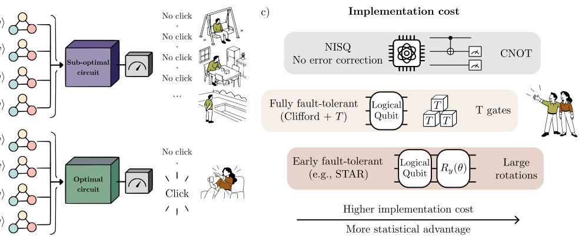
<figcaption class="paper-figure-caption"><b>Fig 1.</b> FIG. 1. Schematic representation of our results. Four copies of the same three-qubit state are processed by a collective measurement designed to detect a nonzero three-tangle. (a) A suboptimal detector has a smaller click probability, and can therefore require many repeated circuit executions before a successful detection event is observed. (b) The optimal one-sided four-copy detector maximizes the click probability for a fixed τ3, substantially reducing the number of repetitions required to observe a click. (c) The resulting tradeoff between statistical efficiency and implementation cost persists across different computational regimes. On NISQ hardware, a larger click probability comes at...</figcaption>
</figure>
<figure class="paper-figure-card">
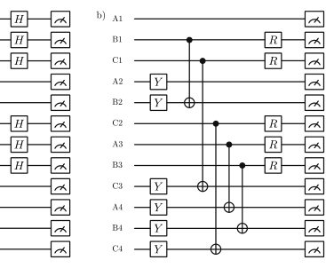
<figcaption class="paper-figure-caption"><b>Fig 2.</b> FIG. 2. Previous ancilla-free four-copy circuits for the direct measurement of the three-tangle. (a) Cir- cuit representation of the construction in [14], which uses standard destructive Bell-basis measurements and translates into 6 CNOTS. (b) Circuit proposed by in [17], containing 5 CNOTs. Here, the R gate denotes the rotation about the y axis R = Ry(−π/2). Throughout this work we use the convention RY (θ) = e−iθY/2. Moreover, A1, A2, A3 and A4 denote the four copies of the first qubit in |ψ⟩(i.e., the Alice qubits), with similar notation for the copies of Bob and Char- lie’s qubits.</figcaption>
</figure>
<figure class="paper-figure-card">
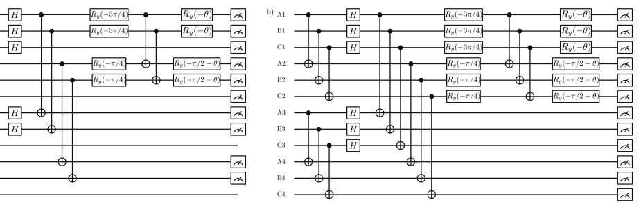
<figcaption class="paper-figure-caption"><b>Fig 3.</b> FIG. 3. Four-copy ancilla-free circuits introduced in this work. (a) Reduced detector using two five-CNOT local J = 0 projectors and one single-CNOT singlet measurement, for a total of 11 CNOT gates and click probability τ 2 3 /96. (b) Optimal detector using three five-CNOT local J = 0 projectors, for a total of 15 CNOT gates and click probability τ 2 3 /48. Here θ = arctan(1/ √</figcaption>
</figure>
<figure class="paper-figure-card">
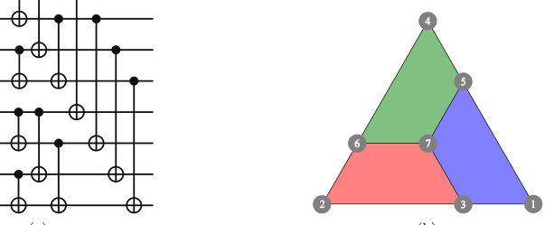
<figcaption class="paper-figure-caption"><b>Fig 4.</b> FIG. 4. Summary of quantum reed–muller code and the methods used in this paper for fault-tolerant architecture. (a) Hypercube circuit for encoding an arbitrary state into a QRM code. The example shown encodes the three-qubit state |q1, q2, q3⟩into the [[8, 3, 2]] code. (b) The [[7, 1, 3]] Steane code. Gray circles represent physical qubits, while the green, red, and blue faces indicate the supports of the corresponding X- and Z-type stabilizer generators.</figcaption>
</figure>
</div>

<p><strong>Summary.</strong> This paper determines the theoretically optimal quantum measurement for quantifying the three-tangle, a measure of tripartite entanglement. While the optimal detector significantly improves statistical efficiency, the authors rigorously prove that this gain comes at a substantial cost in terms of required quantum circuit complexity. They provide detailed resource estimates for implementing this optimal measurement in both near-term and fully fault-tolerant quantum computing architectures.</p>
<p><strong>Why it may be interesting.</strong> This work is highly relevant as it directly addresses the practical limitations of quantum characterization protocols. The explicit quantification of the trade-off between measurement fidelity and required quantum resources (T-gates) is crucial for designing near-term and fault-tolerant quantum computation experiments.</p>
<details>
<summary>Detailed structure</summary>
<p><strong>Main problem.</strong> The paper aims to identify the statistically optimal quantum measurement (detector) for quantifying the three-tangle ($   au_3$) in three-qubit states and to analyze the associated resource costs for its fault-tolerant implementation.</p>
<p><strong>Main result.</strong> The optimal detector achieves a click probability of $ au_3^2/48$, significantly better than previous methods. However, achieving this statistical optimum necessitates increasingly complex and resource-intensive quantum circuits, especially in the fault-tolerant regime.</p>
<p><strong>Method.</strong> The authors use representation theory and quantum measurement formalism to derive the optimal projector. They then analyze circuit implementations using CNOT gates and estimate the required non-Clifford resources (T-gates) for fault-tolerant encoding using codes like the Steane and [[8, 3, 2]] codes.</p>
<p><strong>Model / system.</strong> The system involves pure three-qubit quantum states, where the three-tangle $   au_3$ quantifies genuine tripartite entanglement. The detection process requires measuring the state across four independent copies of the system ($\otimes^4$).</p>
<p><strong>Key observables.</strong> Three-tangle ($    au_3$), Optimal Click Probability ($ au_3^2/48$), Number of CNOT gates (e.g., 15 CNOTs), T-gate count ($#T$).</p>
<p><strong>Important parameters / regimes.</strong> The trade-off between statistical efficiency (high click probability) and implementation cost (low gate count/T-count) is central; the approximation error $\epsilon$ governs the fault-tolerance scaling.</p>
<p><strong>Assumptions / limitations.</strong> The analysis assumes the availability of fault-tolerant logical Clifford gates and the use of specific quantum error-correcting codes (Steane, [[8, 3, 2]]) for resource estimation.</p>
<p><strong>Figures summary.</strong> Figures schematically illustrate the trade-off between detector efficiency and circuit complexity across different regimes (NISQ to fault-tolerant). Figure 3 details the structure of the 11-CNOT and 15-CNOT circuits.</p>
<p><strong>Paper structure.</strong> The paper progresses from establishing the theoretical upper bound for the detection probability using the three-tangle, constructing the optimal ancilla-free circuits (15-CNOT), and finally quantifying the resource overhead by analyzing the non-Clifford synthesis costs in fully fault-tolerant settings using specific quantum codes.</p>
</details>
<details>
<summary>Abstract</summary>
<p>The three-tangle, $τ_3$, is a measure of genuine tripartite entanglement that distinguishes GHZ-type from W-type entanglement in pure three-qubit states. Here, we identify the statistically optimal one-sided four-copy detector of the three-tangle and study its implementation cost. The optimal detector has click probability $τ_3^2/48$, while previous four-copy constructions achieve $τ_3^2/256$ and therefore require asymptotically $16/3$ times as many experimental repetitions. Using the representation-theoretic structure of the problem, we construct an ancilla-free implementation of the optimal detector using 15 CNOT gates, together with an 11-CNOT detector with click probability $τ_3^2/96$. These results reveal a tradeoff between statistical efficiency and implementation cost, since reducing the number of repetitions requires increasingly expensive circuits. We then show that this tradeoff persists once the circuits are encoded. In a fully fault-tolerant setting, the increased click probability comes with a substantial non-Clifford synthesis cost, while an early fault-tolerant implementation based on $T$ gates and STAR rotations reduces this overhead at the expense of additional encoded resources. We quantify these costs using both the Steane and $[[8,3,2]]$ codes, providing explicit resource estimates for implementing the optimal detector across different computational regimes.</p>
</details>
<p><sub><a href="#top">↑ back to top</a></sub></p>

<p><a id="paper-2610.28278"></a></p>
<h3 id="dynamics-of-two-bosons-with-density-assisted-tunnelling-in-a-one-dimensional-tilted-lattice"><a href="http://arxiv.org/abs/2610.28278v1">Dynamics of two bosons with density-assisted tunnelling in a one-dimensional tilted lattice</a></h3>
<p><strong>Authors:</strong> Muhammad S. Hasan, Vikash Mittal, Tomasz Sowiński<br>
<strong>Type:</strong> theory · <strong>Category:</strong> quantum gases · <strong>PDF:</strong> <a href="https://arxiv.org/pdf/2610.28278v1">https://arxiv.org/pdf/2610.28278v1</a><br>
<strong>Analysis basis:</strong> full PDF text, analyzed in chunks
<strong>Topic relevance:</strong> 🔥 <code>analog quantum simulation</code> <strong>4/5</strong> · <code>Frenkel-Kontorova</code> <strong>1/5</strong></p>
<div class="figure-strip-hint">↔ Scroll figures horizontally</div>
<div class="paper-figures-scroll">
<figure class="paper-figure-card">
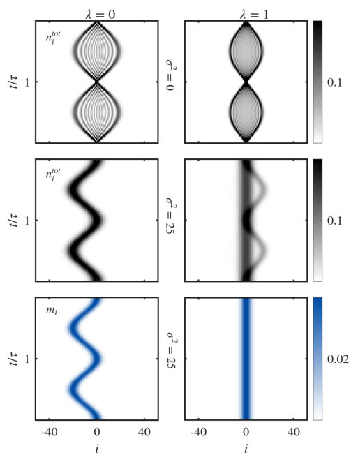
<figcaption class="paper-figure-caption"><b>Fig 1.</b> FIG. 1. Time-evolved density distributions ntot i (t) of two non- interacting bosons (U = 0) for standard hopping only λ = 0, (left column) and density-assisted tunnelling only λ = 1 (right column). The top row shows both bosons initially localised at the centre of the lattice with σ2 = 0. The middle row shows Gaussian wave packet with width σ2 = 25. In the bottom row, the time evolved density mi(t) of the superposition of states where the bosons separated by one empty site is shown. The time evolution is performed over t = [0, 2τ].</figcaption>
</figure>
<figure class="paper-figure-card">
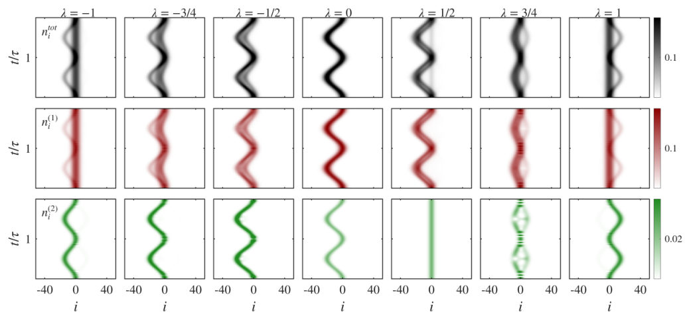
<figcaption class="paper-figure-caption"><b>Fig 2.</b> FIG. 2. Time-evolved density distributions for non-interacting bosons, (U = 0) prepared initially in a Gaussian state (3) with σ2 = 25. Top row shows total density ntot i . Singlon density n(1) i and doublon density n(2) i are shown in middle and bottom rows, respectively. At λ = 0, all three densities exhibit regular Bloch oscillations with period τ = 2π/F. At λ = +1/2, the doublon density is completely frozen due to destructive interference between J and T, while singlons remain oscillatory. The reinforcing regime λ &lt; 0 produces enhanced oscillation amplitudes, whereas the competitive regime λ &gt; 0 leads to reduced amplitudes and the emergence of a non-oscillating background. At λ = ±1,...</figcaption>
</figure>
<figure class="paper-figure-card">
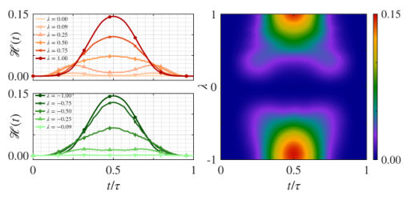
<figcaption class="paper-figure-caption"><b>Fig 3.</b> FIG. 3. Hellinger distance H (t) as a function of time and different λ. For λ = 0, H (t) = 0, confirming no distortion of the density profile under standard hopping alone. For 0 &lt; λ &lt; 1/2, a double- peak structure emerges with maxima near t = τ/4 and t = 3τ/4, which collapses into a single peak near t = τ/2 for λ ≥1/2. No double-peak structure is observed for λ &lt; 0.</figcaption>
</figure>
<figure class="paper-figure-card">
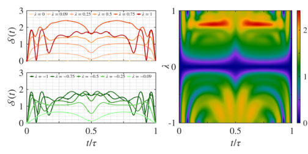
<figcaption class="paper-figure-caption"><b>Fig 4.</b> FIG. 4. The von Neumann entropy S(t) as a function of time t and parameter λ for one Bloch period. At λ = 0, the entropy vanishes, confirming that standard hopping alone generates no inter-particle correlations. As |λ| increases, the density-assisted tunnelling builds up correlations between particles, with the entropy being higher for negative λ. The entropy returns to zero at t = τ reflecting the period- icity of the Bloch dynamics.</figcaption>
</figure>
<figure class="paper-figure-card">
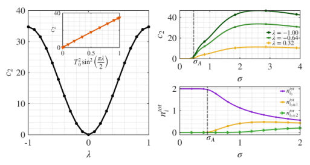
<figcaption class="paper-figure-caption"><b>Fig 5.</b> FIG. 5. Early-time entropy generation coefficient c2 as a function of λ and Gaussian width σ. Inset shows c2 plotted against T 2, collapsing onto a straight line. Bottom-right panel shows the initial-state site occupations ni0, ni0±1, and ni0±2 at the central, nearest-neighbour, and next-nearest-neighbour sites as a function of σ.</figcaption>
</figure>
</div>

<p><strong>Summary.</strong> This theoretical study examines how two bosons behave in a tilted optical lattice when two types of tunnelling—standard and density-assisted—compete or reinforce each other. By controlling the relative strength of these tunnelling terms, the authors map out distinct dynamical regimes, showing that the interplay can lead to unique phenomena like the complete decoupling of particle sectors. This is highly relevant for understanding correlated quantum transport in cold atom setups.</p>
<p><strong>Why it may be interesting.</strong> This work provides a controlled, few-body setting to study how different types of correlated hopping terms (density-assisted tunnelling) modify fundamental quantum transport phenomena like Bloch oscillations and entanglement generation in ultracold atomic systems.</p>
<details>
<summary>Detailed structure</summary>
<p><strong>Main problem.</strong> The study investigates the quantum dynamics and entanglement of two bosons moving in a one-dimensional tilted optical lattice, focusing on the interplay between standard and density-assisted tunnelling.</p>
<p><strong>Main result.</strong> The interplay between the two tunnelling mechanisms can drastically alter dynamics and entanglement, notably leading to a complete decoupling of the doublon and singlon sectors under specific conditions.</p>
<p><strong>Method.</strong> The dynamics are calculated by time-evolving the state in the Fock basis, analyzing observables like entanglement entropy and density profiles.</p>
<p><strong>Model / system.</strong> The system is modeled by two spinless bosons in a 1D optical lattice described by an extended Bose-Hubbard Hamiltonian that includes standard hopping (J), linear tilt (F), onsite interaction (U), and density-assisted tunnelling (T).</p>
<p><strong>Key observables.</strong> Total density, doublon density, singlon density, Hellinger distance (H(t)), and Von Neumann Entropy (S(t)).</p>
<p><strong>Important parameters / regimes.</strong> The relative strength and sign of the two tunnelling processes, controlled by a parameter $\lambda$, and the onsite interaction $U$.</p>
<p><strong>Assumptions / limitations.</strong> The analysis involves splitting the system into doublon and singlon subspaces, and some calculations are truncated to low orders in time ($O(t^3)$).</p>
<p><strong>Figures summary.</strong> The notes describe how Hellinger distance and entropy evolve differently for positive versus negative $\lambda$, and how density profiles exhibit static backgrounds or oscillations depending on the relative tunnelling strengths.</p>
<p><strong>Paper structure.</strong> The paper systematically analyzes the Hamiltonian by varying the relative tunnelling strengths ($\lambda$), examining the resulting density dynamics, entanglement growth (entropy), and the special decoupling case when $J=T$.</p>
</details>
<details>
<summary>Abstract</summary>
<p>We investigate the dynamics of two bosons in a tilted one-dimensional optical lattice with both standard and density-assisted tunnelling. The relative sign of the two tunnelling processes strongly affects the Bloch dynamics, leading to distinct reinforcing and competing regimes. We examine how the tunnelling processes generate correlations and find that, in the absence of onsite interactions, the early-time entanglement growth follows the same scaling with the density-assisted tunnelling amplitude. Finite onsite interaction changes this picture by breaking the symmetry between the reinforcing and competing regimes and enhancing the correlation differently in two regimes. This shows how the interplay between the two tunnelling mechanisms can change dyanmics and entanglement in a controlled few-body setting. Particularly, at equal tunnelling amplitudes, the doublon and singlon sectors decouple completely for arbitrary onsite interaction, lattice tilting, and initial state.</p>
</details>
<p><sub><a href="#top">↑ back to top</a></sub></p>

<p><a id="paper-2610.28204"></a></p>
<h3 id="parallel-teleportation-via-ame52-states-on-ibm-quantum-hardware"><a href="http://arxiv.org/abs/2610.28204v1">Parallel Teleportation via AME(5,2) States on IBM Quantum Hardware</a></h3>
<p><strong>Authors:</strong> Zheng Liang Lim, Hoi-Kwong Lo<br>
<strong>Type:</strong> experiment · <strong>Category:</strong> quantum information and computing · <strong>PDF:</strong> <a href="https://arxiv.org/pdf/2610.28204v1">https://arxiv.org/pdf/2610.28204v1</a><br>
<strong>Analysis basis:</strong> full PDF text, analyzed in chunks
<strong>Topic relevance:</strong> 🔥 <code>QC/QI experiment</code> <strong>4/5</strong> · <code>quantum measurements</code> <strong>1/5</strong></p>
<div class="figure-strip-hint">↔ Scroll figures horizontally</div>
<div class="paper-figures-scroll">
<figure class="paper-figure-card">
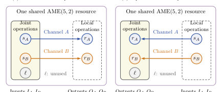
<figcaption class="paper-figure-caption"><b>Fig 1.</b> FIG. 1. Two directions of AME(5, 2)-assisted parallel teleportation (n = 5, d = 2, m = 2), following Helwig et al. [12]. (a) Joint senders to separate receivers; (b) sep- arate senders to joint receivers. The shaded three-qubit group performs joint decoding; the dashed group acts lo- cally. Resource qubits sA, sB are Bell-measured with in- puts IA, IB, yielding outputs OA, OB on receivers rA, rB, respectively; ℓis disentangled and unused. Colours dis- tinguish channels; arrows indicate input-state transfer. Bell measurements, classical communication and Pauli corrections or frame updates are implicit.</figcaption>
</figure>
<figure class="paper-figure-card">
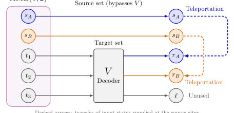
<figcaption class="paper-figure-caption"><b>Fig 2.</b> FIG. 2. Illustration of the role assignment (sA → rA, sB →rB). The source set {sA, sB} bypasses V ; the decoder acts jointly on the remaining three AME qubits to produce rA, rB and the disentangled qubit ℓ. Dashed arrows indicate teleportation of inputs sup- plied at the source sites to the assigned receivers. Bell measurements, classical communication and Pauli cor- rections are implicit. Assigning the five qubits to the ordered roles (sA, rA, sB, rB, ℓ) gives 5! = 120 labelled assignments; identifying assignments that differ only by exchanging the two channel labels leaves 120/2 = 60.</figcaption>
</figure>
<figure class="paper-figure-card">
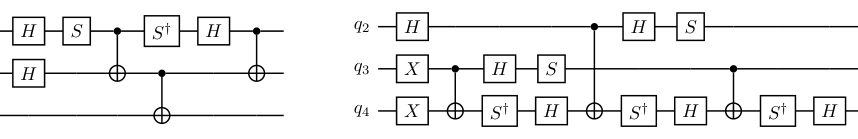
<figcaption class="paper-figure-caption"><b>Fig 3.</b> FIG. 3. The logical decoder circuits, read from left to right. Only the three active AME qubits are displayed; the two source qubits bypass the decoder. Filled circles and ⊕denote CNOT controls and targets. Both decoders contain three CNOTs. Rank 1 contains three Hadamards, one S and one S† gate; rank 58 contains six Hadamards, two S, three S† and two X gates. Their depths are six and ten, respectively, counting sequential layers of all gates while allowing independent operations on disjoint qubits to share a layer.</figcaption>
</figure>
<figure class="paper-figure-card">
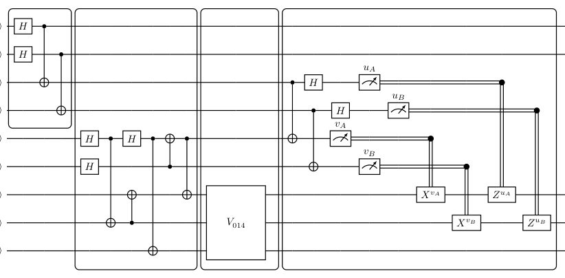
<figcaption class="paper-figure-caption"><b>Fig 4.</b> FIG. 4. Circuit diagram of one logical round of parallel teleportation, using the rank 1 decoder. At R0, the H-CNOT circuits prepare (RA, IA) and (RB, IB) in |Φ+⟩. The references RA, RB are retained while V014 decodes the AME resource. Bell outcomes (uc, vc) determine the Pauli correction on Oc. The displayed correction boxes are implemented through classical Pauli frame post-processing in the main experiment. In the cascade, I(R+1) c ≡O(R) c . The same reference qubits are retained through the cascade. The diagram shows logical operations, not their parallelised hardware schedule.</figcaption>
</figure>
<figure class="paper-figure-card">
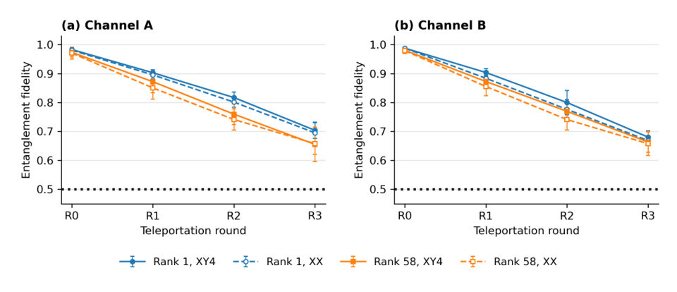
<figcaption class="paper-figure-caption"><b>Fig 5.</b> FIG. 5. Reference-receiver entanglement fidelities after repeated AME-assisted parallel teleportation on hardware, with optimisation level 2 and classical Pauli frame post-processing. Panels (a) and (b) show channels A and B. Blue circles and orange squares identify ranks 1 and 58; solid filled-marker curves show XY4, and dashed open-marker curves show XX. Points are M3-mitigated means over eight trials; error bars are pointwise two-sided 99% confidence intervals. The thick black dotted line marks the 1/2 separability threshold, and R0 is the input Bell pair baseline. The data are obtained from the full grouped-bar results in Supplementary Material, Sec. VII.</figcaption>
</figure>
</div>

<p><strong>Summary.</strong> This paper reports a hardware demonstration of parallel quantum teleportation using the AME(5,2) state on superconducting quantum hardware. By implementing optimized decoding circuits and utilizing classical post-processing, the authors successfully maintained entanglement fidelity across multiple teleportation rounds. This work advances the practical realization of multi-channel quantum communication protocols.</p>
<p><strong>Why it may be interesting.</strong> This work provides a concrete, hardware-validated demonstration of complex quantum networking protocols (parallel teleportation) using advanced multipartite entangled states, which is highly relevant for building scalable quantum repeaters and communication channels.</p>
<details>
<summary>Detailed structure</summary>
<p><strong>Main problem.</strong> The paper aims to demonstrate the feasibility of parallel quantum teleportation using a single, highly entangled resource state, the AME(5,2), on real quantum hardware.</p>
<p><strong>Main result.</strong> The authors successfully demonstrated entanglement retention across two parallel channels over three teleportation rounds, achieving final fidelities exceeding the separability threshold of 1/2.</p>
<p><strong>Method.</strong> The experiment involves constructing and implementing optimized Clifford decoders to extract multiple Bell pairs from the AME state, followed by parallel teleportation rounds and classical Pauli frame post-processing.</p>
<p><strong>Model / system.</strong> The resource is the five-qubit Absolutely Maximally Entangled AME(5,2) state. The physical platform used for the demonstration is the superconducting processor, specifically the ibm_pittsburgh quantum hardware.</p>
<p><strong>Key observables.</strong> Final entanglement fidelities ($0.704 \pm 0.028$ and $0.680 \pm 0.022$), signed Bell correlations ($\langle XX 
angle$, $-\langle Y Y 
angle$, $\langle ZZ 
angle$), and circuit execution time.</p>
<p><strong>Important parameters / regimes.</strong> Three teleportation rounds; the separability threshold of 1/2; the use of XY4 dynamical decoupling.</p>
<p><strong>Assumptions / limitations.</strong> The fidelity measurements include state preparation and measurement errors, and the comparison between classical and real-time Pauli correction methods is complicated by differing experimental acquisitions.</p>
<p><strong>Figures summary.</strong> Figures illustrate the joint and separate operations for AME(5,2)-assisted parallel teleportation, show implemented decoder circuits (Rank 1, Rank 58), and compare entanglement fidelity decay across multiple rounds under various error mitigation and decoupling schemes.</p>
<p><strong>Paper structure.</strong> The paper details the theoretical basis of AME states, presents the experimental setup on the IBM hardware, describes the decoder construction and optimization, and finally reports comparative results on entanglement fidelity retention across multiple rounds using different error mitigation and decoding strategies.</p>
</details>
<details>
<summary>Abstract</summary>
<p>The five-qubit Absolutely Maximally Entangled AME$(5,2)$ state, whose every pair of qubits is maximally mixed so that all its information lives in non-local correlations, could in principle serve as a single shared quantum networking resource for teleporting two unknown qubits in parallel (each via its own Bell measurement and Pauli correction). Nonetheless, its hardware implementations remain scarce despite its theoretical importance. Here, we demonstrate parallel teleportation based on a five-qubit absolutely maximally entangled state, AME$(5,2)$, on the superconducting processor ibm_pittsburgh. We construct three-qubit Clifford decoders that extract two Bell pairs using three logical two-qubit gates for each of 60 inequivalent sender-receiver assignments. Using parallelization and classical Pauli frame post-processing, we retain reference-receiver entanglement on both channels after three teleportation rounds. With XY4 dynamical decoupling and the lowest-cost decoder, the final entanglement fidelities are $0.704\pm0.028$ and $0.680\pm0.022$, where uncertainties are pointwise $99\%$ confidence-interval half-widths over eight trials. Their lower bounds exceed the separability threshold of $1/2$. The decoder with lower circuit depth generally retains higher mean fidelity, and XY4 generally improves on XX. These results establish a hardware demonstration of two-channel entanglement transmission through repeated AME-assisted teleportation and provide compact decoding circuits for reconfigurable multipartite communication.</p>
</details>
<p><sub><a href="#top">↑ back to top</a></sub></p>

<p><a id="paper-2610.28538"></a></p>
<h3 id="nest-ultra-high-rate-qldpc-codes-with-sub-math167maths-stabiliser-cycles-via-spin-shuttling"><a href="http://arxiv.org/abs/2610.28538v1">NeST: ultra-high-rate qLDPC codes with sub-$50μ$s stabiliser cycles via spin shuttling</a></h3>
<p><strong>Authors:</strong> Adam Siegel<br>
<strong>Type:</strong> both · <strong>Category:</strong> quantum information and computing · <strong>PDF:</strong> <a href="https://arxiv.org/pdf/2610.28538v1">https://arxiv.org/pdf/2610.28538v1</a><br>
<strong>Analysis basis:</strong> full PDF text, analyzed in chunks
<strong>Topic relevance:</strong> 🔥 <code>QC/QI experiment</code> <strong>4/5</strong></p>
<div class="figure-strip-hint">↔ Scroll figures horizontally</div>
<div class="paper-figures-scroll">
<figure class="paper-figure-card">
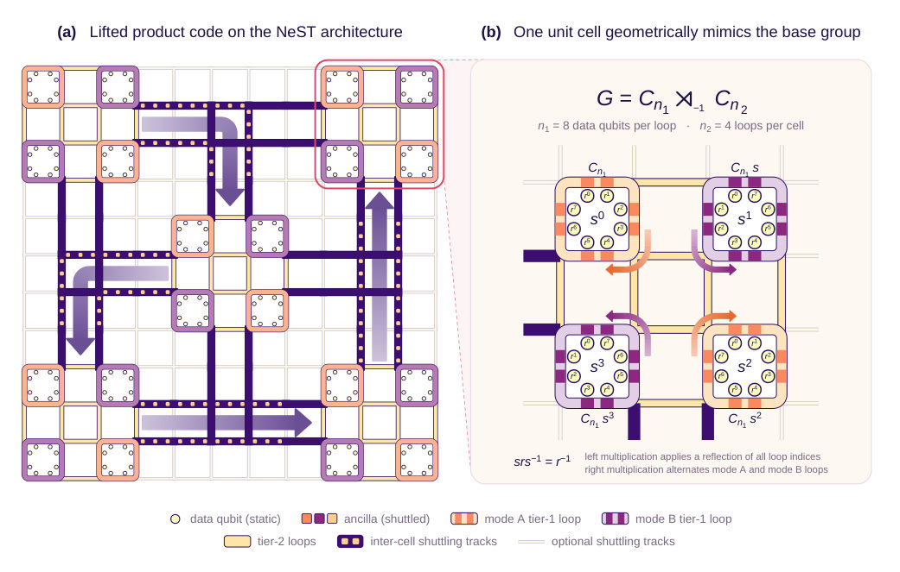
<figcaption class="paper-figure-caption"><b>Fig 1.</b> FIG. 1. A lifted product code on the NeST architecture. (a) The five data qubit blocks of a mitten code — four left blocks (corners) and one right block (centre) — become five unit cells on a single square lattice of shuttling tracks, arranged in the 2D pattern of the protograph. Each cell holds |G| static data qubits and can host one block of shuttled ancillas at a time. Within a cell, ancillas move as described in Fig. 4; between cells they are translated wholesale along the inter-cell highways (dark purple, arrows), which supply the long-range connectivity the base matrices A and B may demand. The pale tracks are optional: the lattice is strictly square throughout and may be made denser...</figcaption>
</figure>
<figure class="paper-figure-card">
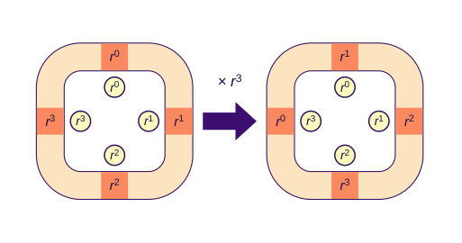
<figcaption class="paper-figure-caption"><b>Fig 2.</b> FIG. 2. Cyclic group embedding on a conveyor loop. A single loop with n = 4 sites, drawn before (left) and after (right) the multiplication by r3. The data qubits (circles) are static and label the sites of the loop by the group elements r0, . . . , r3; the ancillas (squares) ride the belt and are labelled by the element they carry. Advancing the belt by three sites sends the ancilla rj from site rj to site rj+3, leaving every data qubit where it is. Thus a multiplication by rk is realised by one global rotation of the belt, meaning that the shuttling control cost is independent of n.</figcaption>
</figure>
<figure class="paper-figure-card">
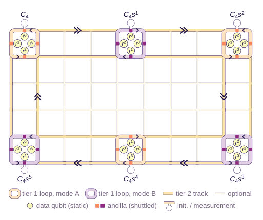
<figcaption class="paper-figure-caption"><b>Fig 3.</b> FIG. 3. Shuttling-track embedding of the group G = Cn1 ⋊−1 Cn2. Each one of the n2 tier-1 loops hosts n1 data qubits (yellow circles) labelled as the elements rksl of Cn1sl</figcaption>
</figure>
<figure class="paper-figure-card">
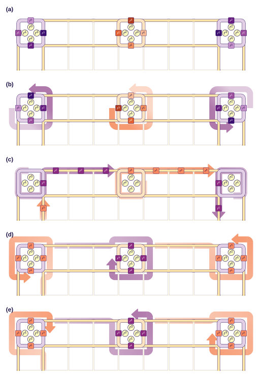
<figcaption class="paper-figure-caption"><b>Fig 4.</b> FIG. 4. Implementation of all motions required by G = Cn1 ⋊−1 Cn2. Each panel shows the hosting loops C4, C4s and C4s2 i.e. the top row of Fig. 3. (a) Initial config- uration: ancilla and data labels are aligned. (b) Intra-loop rotation: each hosting loop rotates its n1 ancillas collectively along its belt. Same-colour loops always follow the same rela- tive rotation direction, but different-colour loops alternatively co- or counter-rotate (left or right multiplication by a rota- tion). Here a right multiplication by r is shown: mode-A (-B) ancilla ri moves to the site of ri+1 (ri−1). (c) Inter-loop ro- tation, departure: the ancillas of each loop leave as a train for the next loop of the...</figcaption>
</figure>
<figure class="paper-figure-card">
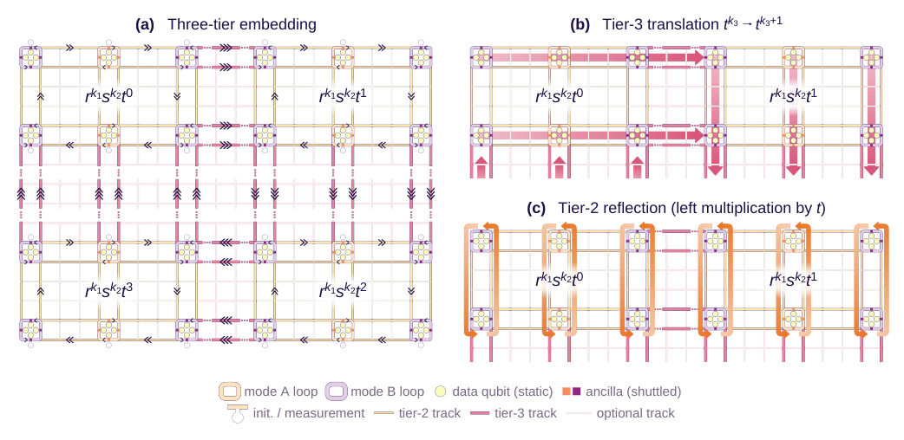
<figcaption class="paper-figure-caption"><b>Fig 5.</b> FIG. 5. Three-tier embedding and the motions it adds. (a) Four tier-2 cells (n3 = 4), each of them a copy of Fig. 3 (up to a few new non-optional tracks), are arranged as a 2 × (n3/2) array and connected by tier-3 tracks (pink). Here ⃗n = (4, 6, 4). A cell is labelled by the tier-3 index it carries, rk1sk2tk3, and the cells are ordered clockwise in k3 exactly as the tier-1 loops are ordered in k2 one tier below. Left/right and top/bottom cells are spaced by 6 and 2n2 −1 edges respectively, chosen so that the trains of panel (b) never meet. Like for the lower tiers, the grid is strictly square and most tracks are optional (faded): they can be added to shorten routes or to steer around...</figcaption>
</figure>
</div>

<p><strong>Summary.</strong> This paper presents NeST, a novel hardware architecture for silicon spin qubits that implements high-rate quantum error-correcting codes. By mapping code structure onto nested shuttling tracks mimicking group theory, it achieves significantly faster stabilizer cycles than previous platforms. This work proves that high performance and fault tolerance can coexist in solid-state quantum computing.</p>
<p><strong>Why it may be interesting.</strong> It provides a concrete, hardware-aware roadmap for fault-tolerant quantum computation using solid-state qubits, directly addressing the engineering bottleneck of scaling QEC codes.</p>
<details>
<summary>Detailed structure</summary>
<p><strong>Main problem.</strong> The challenge is to build quantum error correction codes (qLDPC) with high encoding rates that are physically realizable on solid-state hardware, overcoming limitations in connectivity and speed.</p>
<p><strong>Main result.</strong> The authors introduce NeST, an architecture using silicon spin qubits, which enables high-rate codes with sub-50us stabilizer cycles, demonstrating that fast clock speeds and low-overhead fault tolerance are compatible.</p>
<p><strong>Method.</strong> The work involves co-designing the quantum code structure (based on group theory) with the hardware geometry (nested conveyor-belt loops) and simulating performance under realistic noise models.</p>
<p><strong>Model / system.</strong> The physical system is silicon spin qubits utilizing electron shuttling along fabricated tracks. The architecture, NeST, mimics the geometry of non-abelian groups, allowing group multiplication to be realized as rigid, global motions of qubit trains.</p>
<p><strong>Key observables.</strong> Logical error probability ($P_L$), stabilizer cycle time (sub-50us), code rate (up to 20-30%), and circuit distance ($d_{	ext{circ}}$).</p>
<p><strong>Important parameters / regimes.</strong> Shuttling dephasing rate ($ ext{psh}$), physical error rates ($p$), and the required group structure parameters ($\vec{n}, \sigma$).</p>
<p><strong>Assumptions / limitations.</strong> The core primitive is collision-free, rigid, global motion of qubit trains along a plain lattice of shuttling tracks.</p>
<p><strong>Figures summary.</strong> Figures illustrate the NeST architecture mapping code blocks onto the lattice and show simulations comparing logical error rates under spin-specific noise versus depolarizing noise.</p>
<p><strong>Paper structure.</strong> The paper progresses from defining the physical limitations and proposing the NeST architecture via group theory, to simulating high-rate codes, and finally evaluating performance under detailed noise models, including gadget construction for fault tolerance.</p>
</details>
<details>
<summary>Abstract</summary>
<p>Quantum low-density parity-check codes now reach encoding rates up to 50% at useful distances. Their checks however are long-range group actions, not local neighbourhoods, and that connectivity has so far been supplied by neutral atoms. Silicon spin qubits offer the same primitive --- coherent transport of qubit blocks --- through electron shuttling, and on microsecond rather than millisecond timescales. They however travel along fabricated tracks rather than free space: permutations an atom array obtains by moving tweezers must here become collision-free motions on a physical lattice. We here present the first code and spin-qubit hardware co-design. We build an architecture whose geometry mimics that of a family of non-abelian groups, broad enough to host codes of excellent parameters: a hierarchy of nested conveyor-belt loops on a plain square lattice of shuttling tracks, in which every group multiplication becomes a rigid, globally controlled motion of whole qubit trains. We call it NeST, for Nested Shuttling Tracks. A code search over the family returns rate-20% mitten codes up to $[[1400,280,\leq 28]]$, and circuit-level simulations including shuttling dephasing give thresholds above $10^{-3}$ with sub-$50μ$s stabiliser cycles, two to three orders of magnitude faster than neutral-atom implementations. Via extrapolations, we estimate that this largest code may reach a logical error probability per qubit per round of $10^{-14}$, assuming a ten-fold improvement on early shuttling demonstrations, with other physical errors at p=0.1%. Logic is compatible with NeST too: for the [[150,30,10]] code we build a code-surgery gadget in which every qubit again moves only by rigid belt motions, at no qubit cost and a 29% increase in gate layers. This demonstrates that ultra-low-overhead fault tolerance and a fast clock speed are not competing goals, and that silicon spin qubits can supply both.</p>
</details>
<p><sub><a href="#top">↑ back to top</a></sub></p>

<p><a id="paper-2610.27602"></a></p>
<h3 id="resolving-nonlocal-state-reduction-via-induced-coherence-in-frequency-comb-biphoton-sources"><a href="http://arxiv.org/abs/2610.27602v1">Resolving Nonlocal State Reduction via Induced Coherence in Frequency-Comb Biphoton Sources</a></h3>
<p><strong>Authors:</strong> Tai Hyun Yoon<br>
<strong>Type:</strong> both · <strong>Category:</strong> quantum information and computing · <strong>PDF:</strong> <a href="https://arxiv.org/pdf/2610.27602v1">https://arxiv.org/pdf/2610.27602v1</a><br>
<strong>Analysis basis:</strong> full PDF text, analyzed in chunks
<strong>Topic relevance:</strong> <code>correlated / nonlocal dissipation</code> <strong>3/5</strong> · <code>interference shaping light</code> <strong>3/5</strong> · <code>methods for driven-dissipative</code> <strong>3/5</strong> · <code>quantum measurements</code> <strong>3/5</strong> · <code>quantum optics experiment</code> <strong>3/5</strong> · <code>Keldysh / 2PI / non-Gaussian methods</code> <strong>2/5</strong> · <code>driven-dissipative phase transition</code> <strong>2/5</strong> · <code>QC/QI experiment</code> <strong>1/5</strong> · <code>analog quantum simulation</code> <strong>1/5</strong></p>
<div class="figure-strip-hint">↔ Scroll figures horizontally</div>
<div class="paper-figures-scroll">
<figure class="paper-figure-card">
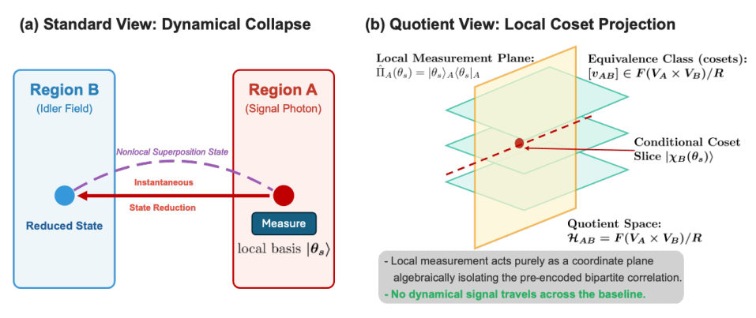
<figcaption class="paper-figure-caption"><b>Fig 1.</b> FIG. 1. Conceptual comparison of nonlocal measurement formalisms. (a) Standard Dynamical</figcaption>
</figure>
<figure class="paper-figure-card">
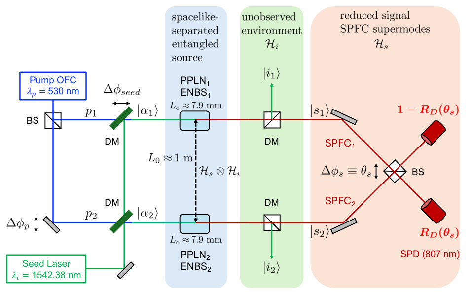
<figcaption class="paper-figure-caption"><b>Fig 2.</b> FIG. 2. Experimental realization of the quotient measurement framework in a dual-crystal</figcaption>
</figure>
<figure class="paper-figure-card">
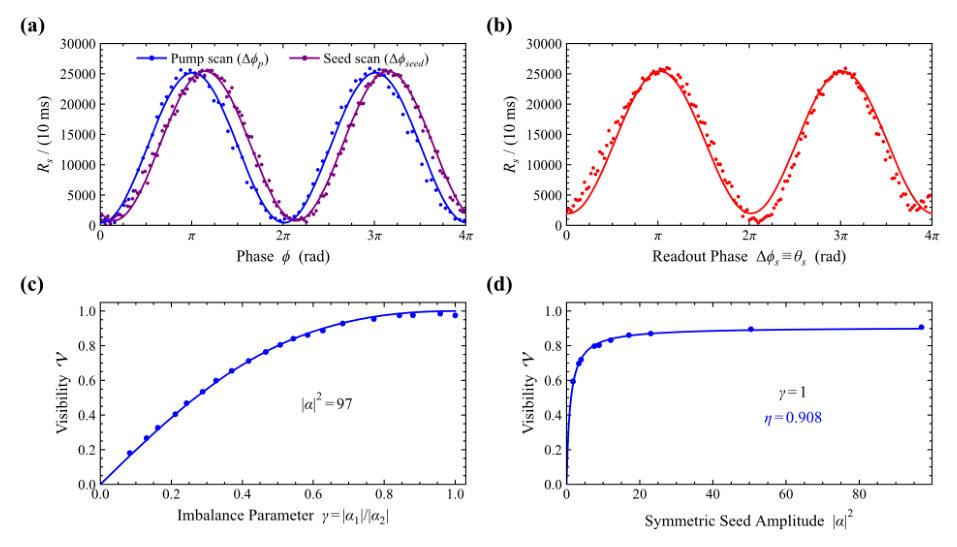
<figcaption class="paper-figure-caption"><b>Fig 3.</b> FIG. 3. Operational validation of the three-scan phase equivalence and spatial Lindblad</figcaption>
</figure>
<figure class="paper-figure-card">
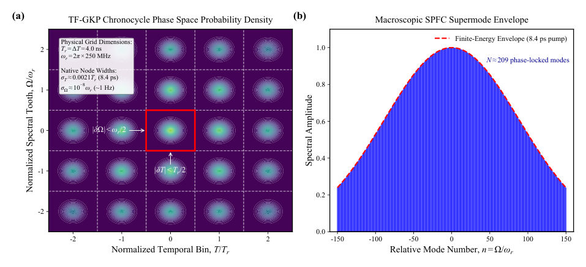
<figcaption class="paper-figure-caption"><b>Fig 4.</b> FIG. 4. Hardware-native continuous-variable Time-Frequency Gottesman-Kitaev-Preskill (TF-</figcaption>
</figure>
<figure class="paper-figure-card">
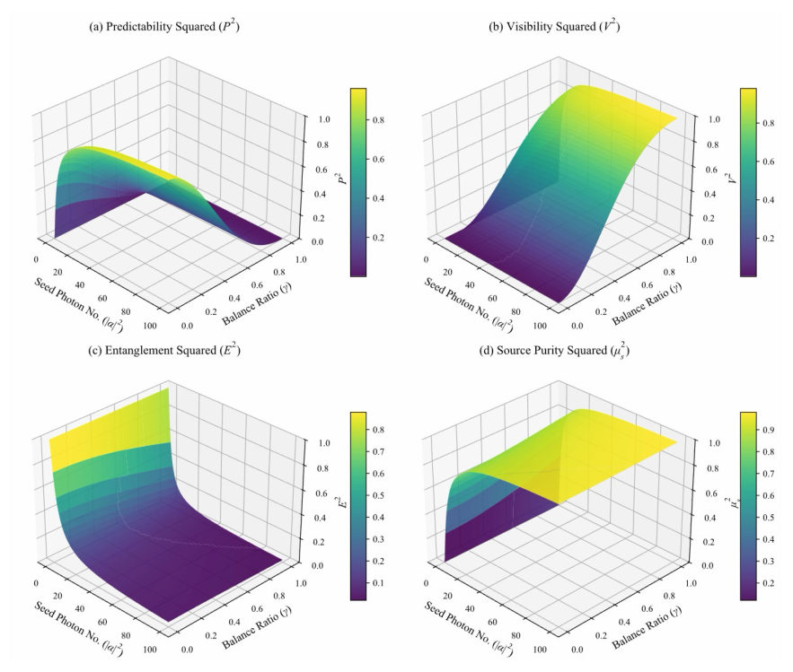
<figcaption class="paper-figure-caption"><b>Fig 5.</b> FIG. 5. Theoretical parameter space mapping of the quantitative wave-particle-entanglement</figcaption>
</figure>
</div>

<p><strong>Summary.</strong> This paper resolves a foundational paradox in quantum mechanics by showing that nonlocal correlations emerge not from instantaneous collapse, but from a geometric projection onto local subspaces defined by measurement. Using frequency-comb biphoton sources, the authors model this process via an open-system Lindblad equation, unifying concepts from complementarity and quotient measurement theory.</p>
<p><strong>Why it may be interesting.</strong> This work provides a highly rigorous, microscopic pathway linking abstract algebraic structures (quotient spaces) to measurable quantum optics phenomena (biphoton interference), which is crucial for building fault-tolerant quantum hardware.</p>
<details>
<summary>Detailed structure</summary>
<p><strong>Main problem.</strong> The paper addresses the foundational paradox of how macroscopic definite outcomes and nonlocal correlations emerge from entangled superpositions without invoking superluminal action or ad hoc wavefunction collapse.</p>
<p><strong>Main result.</strong> It resolves this by demonstrating that single-particle interference arises from a geometric projection onto detector-defined conditional cosets, establishing operational equivalence with local subspace filtering rather than remote collapse.</p>
<p><strong>Method.</strong> The authors develop an open-system framework using Lindblad master equations and connect it to free-vector-space quotient measurement theory to model state reduction.</p>
<p><strong>Model / system.</strong> The physical platform is a dual, spacelike-separated nonlinear crystal driven by a multi-mode optical frequency comb, realizing a continuous-variable time-frequency Gottesman-Kitaev-Preskill (TF-GKP) logical qubit.</p>
<p><strong>Key observables.</strong> The wave-particle-entanglement triality equality ($P^2 + E^2 + V^2 = 1$), interference visibility ($V$), and the invariant phase $\Delta\Phi$.</p>
<p><strong>Important parameters / regimes.</strong> The decoherence rate $\Gamma_{	ext{deph}}$, the seed photon number $|\alpha|^2$, and the balance ratio $\gamma$.</p>
<p><strong>Assumptions / limitations.</strong> The framework assumes that the physical system dynamics can be accurately modeled by an open-system map derived from tracing out unmeasured continuous-wave idler fields.</p>
<p><strong>Figures summary.</strong> Figures compare standard dynamical collapse versus the Quotient View (local Coset Projection) and map the theoretical parameter space showing the saturation of the triality equality.</p>
<p><strong>Paper structure.</strong> The paper progresses by first defining the foundational paradox, then developing the open-system/quotient measurement framework, applying it to the physical realization in frequency-comb sources, and finally confirming the results by showing the saturation of the key mathematical identities.</p>
</details>
<details>
<summary>Abstract</summary>
<p>How macroscopic definite outcomes and nonlocal correlations emerge from entangled superpositions across spacelike-separated regions without superluminal action or {\it ad hoc} wavefunction collapse remains a defining open question in the foundations of quantum mechanics. Here, we resolve this century-long paradox within \textit{linear} relativistic quantum electrodynamics by developing an open-system and measurement-defined framework realized in dual, spacelike-separated nonlinear crystals driven synchronously by a multi-mode optical frequency comb and seeded by an ultra-narrow coherent laser. Expanding the transverse electromagnetic vector potential into discrete single-photon frequency-comb supermodes, we show that tracing out the unmeasured continuous-wave idler field yields an exact spatial dephasing Lindblad master equation whose decoherence rate is governed by the non-orthogonal state overlap of single-photon-added coherent states. Connecting this open-system map to free-vector-space quotient measurement theory, we demonstrate that single-particle interference arises from the geometric projection of the composite state onto detector-defined conditional cosets rather than remote collapse, establishing strict operational equivalence across pump, seed, and signal phase scans. The resulting wave-particle-entanglement triality equality $P^2 + E^2 + V^2 = 1$ is saturated across the complete parameter space, while the atomic-clock-referenced comb structure anchors continuous-variable time-frequency displacement stabilizers directly at the hardware layer. Our work unifies induced coherence, Bohr's complementarity, and quotient measurement theory, providing a microscopic pathway toward fault-tolerant bosonic quantum information processing.</p>
</details>
<p><sub><a href="#top">↑ back to top</a></sub></p>

<p><a id="paper-2610.28336"></a></p>
<h3 id="floquet-ground-state-order"><a href="http://arxiv.org/abs/2610.28336v1">Floquet ground state order</a></h3>
<p><strong>Authors:</strong> Suman Mondal, Paul M. Schindler, Marin Bukov<br>
<strong>Type:</strong> theory · <strong>Category:</strong> statistical mechanics · <strong>PDF:</strong> <a href="https://arxiv.org/pdf/2610.28336v1">https://arxiv.org/pdf/2610.28336v1</a><br>
<strong>Analysis basis:</strong> full PDF text, analyzed in chunks
<strong>Topic relevance:</strong> <code>analog quantum simulation</code> <strong>3/5</strong> · <code>methods for driven-dissipative</code> <strong>3/5</strong> · <code>non-equilibrium universality</code> <strong>3/5</strong> · <code>scars &amp; prethermalization</code> <strong>3/5</strong> · <code>Keldysh / 2PI / non-Gaussian methods</code> <strong>2/5</strong> · <code>driven-dissipative phase transition</code> <strong>2/5</strong> · <code>Frenkel-Kontorova</code> <strong>1/5</strong></p>
<div class="figure-strip-hint">↔ Scroll figures horizontally</div>
<div class="paper-figures-scroll">
<figure class="paper-figure-card">
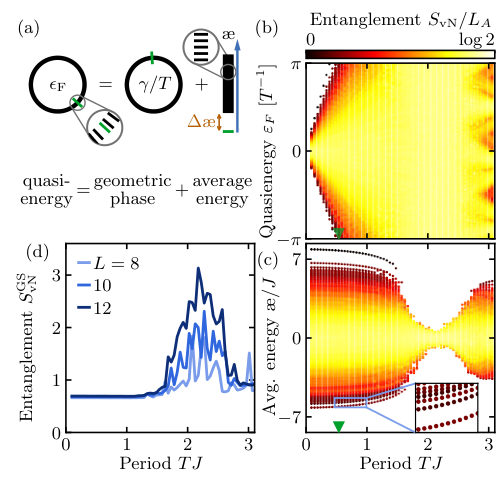
<figcaption class="paper-figure-caption"><b>Fig 1.</b> FIG. 1. Geometric Floquet theory reveals a gapped low-entangled Floquet ground state. (a) For large quantum many-body systems, quasienergies 𝜀𝐹occupy the unit circle densely, and no distinguished Floquet state can be identified. Decomposing them into geometric phase 𝛾and average energy æ can single out a distinct lowest-lying Floquet state (green), protected by a finite æ-gap from a continuum of excitations – the Floquet ground state candidate. Quasienergy (b) and average energy (c) sorting of the exact Floquet eigenstates against driving period in the open nonintegrable Floquet Ising chain (2) of 𝐿=12 spins, obtained using exact diagonalization; colorbar shows half-chain entanglement per...</figcaption>
</figure>
<figure class="paper-figure-card">
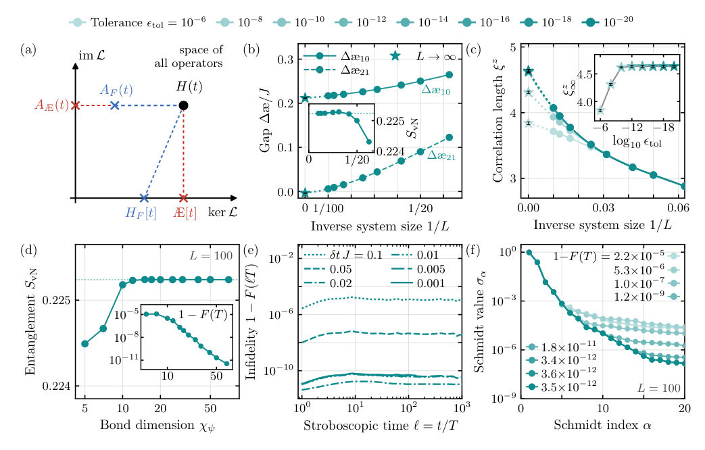
<figcaption class="paper-figure-caption"><b>Fig 2.</b> FIG. 2. Variational principle captures Floquet ground state for the nonintegrable Ising chain (2). (a) Key enabling principle: the average energy Æ[𝑡] is the orthogonal projection of the lab-frame Hamiltonian 𝐻(𝑡) onto the kernel of the Liouvillian, ker L, which defines the space of dynamical invariants, see also Fig. 7. (b) Two lowest average energy gaps, Δæ10=æ1−æ0 (solid) and Δæ21=æ2−æ1 (dashed), against inverse system size at tolerance 𝜖tol=10−20. Curves are polynomial fits in 1/𝐿with stars marking the 1/𝐿= 0 extrapolation intercepts. Inset: entanglement entropy, 𝑆vN versus 1/𝐿showing area-law scaling. (c) Correlation length in the Floquet ground state against inverse system size 1/𝐿,...</figcaption>
</figure>
<figure class="paper-figure-card">
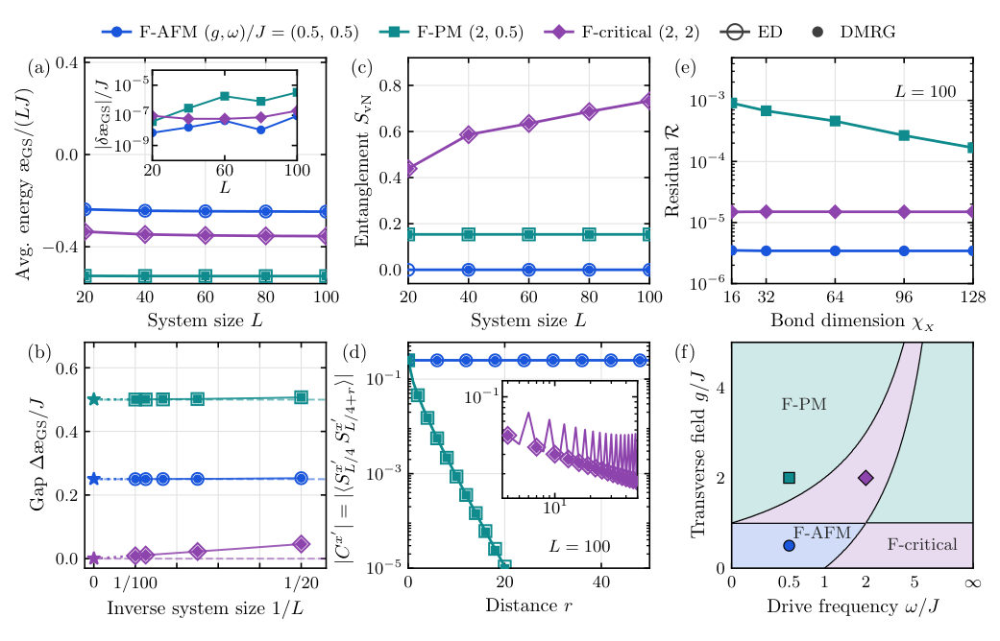
<figcaption class="paper-figure-caption"><b>Fig 3.</b> FIG. 3. Circularly driven XY spin chain (6). Comparison between Floquet-DMRG and exact results calculated using exact diangonalization (ED) methods. In all panels, open symbols joined by solid lines are exact numerical data and filled symbols of the same shape and colour are the Floquet-DMRG data. (a) Ground-state average energy density æGS/𝐿as a function of chain length 𝐿. Inset shows the deviation from exact values |𝛿æGS|=|æED GS −æDMRG GS | for different system sizes. (b) Ground state average energy gap ΔæGS versus invserse system size 1/𝐿. Solid lines are quadratic least-squares fits in 1/𝐿to the DMRG data with stars marking their 1/𝐿→0 extrapolations; dashed lines show the analytic...</figcaption>
</figure>
<figure class="paper-figure-card">
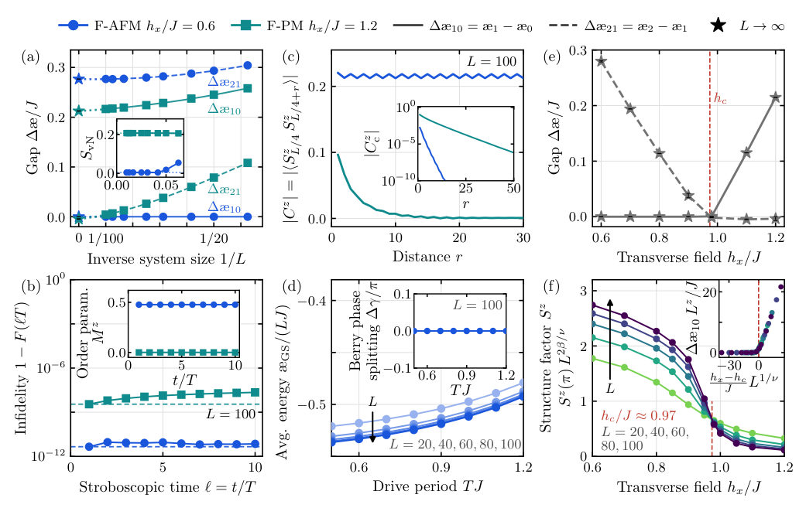
<figcaption class="paper-figure-caption"><b>Fig 4.</b> FIG. 4. Floquet ground state phases and phase transition in mixed-field Ising chain (2) in the high-frequency regime. Panels (a)–(c) show results for the Floquet antiferromagnetic (F-AFM) point (blue, circles, ℎ𝑥/𝐽= 0.6) and the Floquet paramagnetic (F-PM) point (teal, squares, ℎ𝑥/𝐽= 1.2). Stars mark polynomial extrapolation in 1/𝐿in the TD limit [App. E 2]. (a) Average energy gap versus inverse system size survives the extrapolation in the TD limit for both the F-AFM and the F-PM state, for chains of 𝐿= 18 to 𝐿= 100 spins; Δæ10 = æ1 −æ0 (solid lines) and Δæ21 = æ2 −æ1 (dashed lines) are the gaps between the lowest two and the next two average-energy eigenstates, respectively. In the F-AFM...</figcaption>
</figure>
<figure class="paper-figure-card">
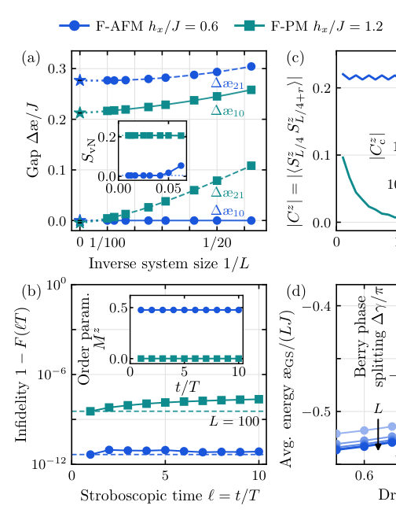
<figcaption class="paper-figure-caption"><b>Fig 5.</b> Figure 4(a, blue data) shows the average energy gaps Δæ between the lowest three average-energy states. Extrapola- tion to the thermodynamic limit is consistent with a doubly-</figcaption>
</figure>
</div>

<p><strong>Summary.</strong> This paper establishes the existence of stable, ordered quantum states in periodically driven (Floquet) interacting systems, contradicting simple thermalization expectations. By using Geometric Floquet theory, the authors identify the order via the average-energy ground state, showing this order is protected by a finite energy gap. This work provides foundational tools for engineering strongly correlated, non-equilibrium quantum matter.</p>
<p><strong>Why it may be interesting.</strong> This work is highly relevant as it provides a rigorous theoretical framework for engineering and characterizing non-equilibrium quantum phases of matter, directly impacting the understanding of driven many-body systems.</p>
<details>
<summary>Detailed structure</summary>
<p><strong>Main problem.</strong> The paper addresses the theoretical challenge of demonstrating stable quantum order in clean, interacting, periodically driven (Floquet) systems, contrasting this with expected thermalization to featureless states.</p>
<p><strong>Main result.</strong> Stable quantum order, distinct from prethermal order, is shown to exist in nonintegrable, periodically driven spin chains, protected by a finite average-energy gap.</p>
<p><strong>Method.</strong> The authors employ Geometric Floquet theory (GFT) and derive a variational principle to compute the Floquet ground state, which is then analyzed using Matrix Product State (MPS) algorithms.</p>
<p><strong>Model / system.</strong> The study focuses on clean, interacting, periodically driven quantum spin chains (Floquet systems). The dynamics are decomposed into geometric and average-energy components, allowing the identification of the Floquet ground state via the average-energy operator.</p>
<p><strong>Key observables.</strong> Average-energy gap, entanglement entropy (area-law scaling), and the detection of different order types (e.g., Floquet antiferromagnets, time crystals).</p>
<p><strong>Important parameters / regimes.</strong> The drive period ($T$), the system size ($L>100$), and the gap magnitude, which closes at phase transition points.</p>
<p><strong>Assumptions / limitations.</strong> The analysis assumes clean (disorder-free) systems and relies on the existence of a finite average-energy gap to protect the ordered state against heating.</p>
<p><strong>Figures summary.</strong> Figures illustrate the decomposition of time evolution into geometric and average-energy dynamics, showing the persistence of a gapped, weakly-entangled ground state across varying driving periods.</p>
<p><strong>Paper structure.</strong> The paper introduces GFT to decompose the time evolution, derives a variational principle for the average-energy ground state, applies this to 1D spin chains using MPS, and concludes by identifying the gap protection mechanism and the evasion of the ETH.</p>
</details>
<details>
<summary>Abstract</summary>
<p>Clean, interacting, periodically driven systems are believed to thermalize to featureless, infinite-temperature states that preclude the formation of stable ordered states. Here, we show stable quantum order, distinct from prethermal order, and its phase transitions in the ground state of the average-energy operator. Decomposing the time evolution into geometric and average-energy dynamics, we apply Geometric Floquet theory to identify the Floquet ground state. We derive a general variational principle to compute the Floquet ground state in large interacting periodically driven systems, and use it to develop a matrix product state algorithm. In driven nonintegrable chains of more than 100 interacting spins, our numerical simulations exhibit a gapped, area-law entangled Floquet ground state in extended parameter regimes; the ground-state manifold can support both dressed equilibrium order (e.g., Floquet antiferromagnets) and inherently nonequilibrium order (e.g., ground-state time crystals). This quantum order is protected by a finite average-energy gap, which closes at phase transition points upon changing model parameters. We decompose Floquet phases of matter into their equilibrium and nonequilibrium elements: whereas the Floquet ground state at any fixed time is a representative of an equilibrium phase of matter, the nonequilibrium content is entirely produced by the drive holonomy and is geometric. Finally, we identify quasilocal counterdiabatic driving as a mechanism for the stability against heating of gapped Floquet ground states in nonintegrable quantum systems, and argue why Floquet ground states evade the Eigenstate Thermalization Hypothesis. Our work enables the study of interacting nonequilibrium matter deep into the many-body regime, and lays the foundations for the engineering of strongly correlated ordered quantum states.</p>
</details>
<p><sub><a href="#top">↑ back to top</a></sub></p>

<p><a id="paper-2610.27948"></a></p>
<h3 id="cooling-more-while-dissipating-less-anomalous-tradeoffs-from-thermodynamic-geometry"><a href="http://arxiv.org/abs/2610.27948v1">Cooling more while dissipating less: anomalous tradeoffs from thermodynamic geometry</a></h3>
<p><strong>Authors:</strong> Andrea Canzio, Vasco Cavina, Salvatore Raia, Vito Vetrano, Matteo Scandi, Paolo Abiuso<br>
<strong>Type:</strong> theory · <strong>Category:</strong> statistical mechanics · <strong>PDF:</strong> <a href="https://arxiv.org/pdf/2610.27948v1">https://arxiv.org/pdf/2610.27948v1</a><br>
<strong>Analysis basis:</strong> full PDF text, analyzed in chunks
<strong>Topic relevance:</strong> <code>driven-dissipative phase transition</code> <strong>3/5</strong> · <code>methods for driven-dissipative</code> <strong>3/5</strong> · <code>non-equilibrium universality</code> <strong>3/5</strong> · <code>Keldysh / 2PI / non-Gaussian methods</code> <strong>2/5</strong> · <code>correlated / nonlocal dissipation</code> <strong>2/5</strong> · <code>quantum measurements</code> <strong>1/5</strong> · <code>scars &amp; prethermalization</code> <strong>1/5</strong></p>
<div class="figure-strip-hint">↔ Scroll figures horizontally</div>
<div class="paper-figures-scroll">
<figure class="paper-figure-card">
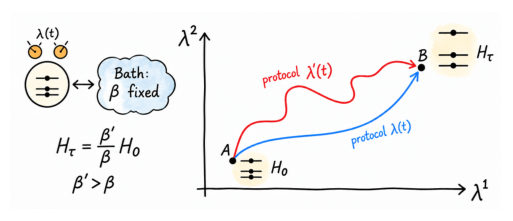
<figcaption class="paper-figure-caption"><b>Fig 1.</b> FIG. 1. Cooling protocol at fixed bath inverse temperature 𝛽. Different control paths connect 𝐻0 to 𝐻𝜏= (𝛽′/𝛽)𝐻0, with 𝛽′ &gt; 𝛽, yielding a final equilibrium state equivalent to cooling the initial Hamiltonian to inverse temperature 𝛽′.</figcaption>
</figure>
<figure class="paper-figure-card">
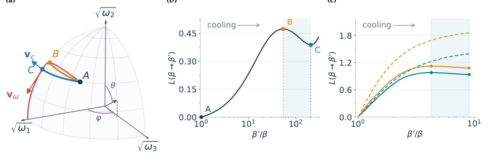
<figcaption class="paper-figure-caption"><b>Fig 2.</b> FIG. 2. NEAT in incoherent systems. (a,b) Qutrit with 𝐻0 = diag(0, 0.03, 1), 𝛽= 0.1, 𝑟𝜃= 5, 𝑟𝜑= 100. (a) Gibbs cooling curve (red) and optimal paths from 𝐴to 𝐵(amber) and 𝐶(blue). Arrows show v𝜍and v𝜔at 𝐶, rescaled for visibility. The purple vector illustrates the spherical coordinates. (b) Exact distance along the Gibbs curve, Eq. (15); shading marks its decrease between 𝐵and 𝐶. (c) Birth–death cooling for 𝑑= 3 (light-blue) and 𝑑= 4 (amber): structured bath (solid) and Ohmic control (dashed). Dots mark targets 𝛽′/𝛽= 4.25 and 𝛽′/𝛽= 9. In (b,c), cooling proceeds right. For (c), ℏ= 𝑘B = 𝛽= 1, 𝐻3 = diag(0, 0.72, 2.40), (𝑐1, 𝑐2) = (1, 0.30); 𝐻4 = diag(0, 0.72, 2.40, 2.70), (𝑐1, 𝑐2, 𝑐3) = (1,...</figcaption>
</figure>
</div>

<p><strong>Summary.</strong> This paper introduces the Near-Equilibrium Anomalous Tradeoff (NEAT), a counterintuitive effect in open quantum systems where cooling or heating can be achieved with unexpectedly low energy dissipation. Using geometric tools derived from the thermodynamic length, the authors establish necessary conditions for NEAT and demonstrate its practical application in enhancing the performance of quantum heat engines.</p>
<p><strong>Why it may be interesting.</strong> This work provides a deep geometric understanding of non-equilibrium thermodynamics, showing how quantum control can violate expected monotonic relationships between work, time, and dissipation, which is crucial for designing efficient quantum thermal machines.</p>
<details>
<summary>Detailed structure</summary>
<p><strong>Main problem.</strong> The paper investigates the Near-Equilibrium Anomalous Tradeoff (NEAT), a counterintuitive phenomenon where optimal quantum driving can achieve target states with less energy dissipation or in less time than expected.</p>
<p><strong>Main result.</strong> NEAT is characterized by a geometric condition related to the thermodynamic length, showing that the minimum dissipation cost is not always monotonic with the temperature difference.</p>
<p><strong>Method.</strong> The analysis uses geometric methods, relating minimum dissipation to the thermodynamic length metric derived from the slow-driving limit of the quantum master equation.</p>
<p><strong>Model / system.</strong> The study applies to open quantum systems undergoing thermalization, modeled by GKSL master equations. Specific examples include qutrit models and d-dimensional birth-death dynamics.</p>
<p><strong>Key observables.</strong> Dissipated Work ($W_{	ext{diss}}$), Thermodynamic Length ($L$), Efficiency ($\eta$), and Power ($P_{max}$).</p>
<p><strong>Important parameters / regimes.</strong> Slow-driving regime ($  au  o \infty$), temperature difference ($eta     o eta'$), and the number of independent control parameters ($n \ge 2$).</p>
<p><strong>Assumptions / limitations.</strong> The dynamics are assumed to be governed by a GKSL thermalizing Markovian master equation, and the analysis relies on the slow-driving/low-dissipation limit.</p>
<p><strong>Figures summary.</strong> Figures illustrate cooling protocols, comparing different control paths, and show the geometric relationship between the Gibbs cooling curve and the optimal paths exhibiting the NEAT effect.</p>
<p><strong>Paper structure.</strong> The paper first defines NEAT and establishes its necessary geometric conditions. It then demonstrates the effect in solvable models (qutrit, birth-death) and finally applies the concept to improve the performance of finite-time heat engines like the Carnot cycle.</p>
</details>
<details>
<summary>Abstract</summary>
<p>We show that, starting from the same state, optimal driving can sometimes reach a colder (or hotter) target in the same amount of time while dissipating less energy, or equivalently dissipate the same amount of energy in a shorter time. We study this counterintuitive phenomenon in the slow-driving regime of an open quantum system, where we name it Near-Equilibrium Anomalous Tradeoff (NEAT). We establish necessary conditions for its occurrence and show its underlying geometric origin. While NEAT is reminiscent of the well-known Mpemba effect, the two phenomena are distinct in general. We demonstrate NEAT in an exactly solvable qutrit model, as well as for d-dimensional birth-death dynamics with independently controlled energy levels. Finally, we show how NEAT can improve the performance of Carnot engines.</p>
</details>
<p><sub><a href="#top">↑ back to top</a></sub></p>

<p><a id="paper-2610.27436"></a></p>
<h3 id="steering-of-topological-criticality-in-the-su-schrieffer-heeger-chain-via-non-hermitian-substitutional-impurities"><a href="http://arxiv.org/abs/2610.27436v1">Steering of topological criticality in the Su-Schrieffer-Heeger chain via non-Hermitian substitutional impurities</a></h3>
<p><strong>Authors:</strong> Juan A. Cañas, Guo-Qing Zhang, A. Martín-Ruiz<br>
<strong>Type:</strong> theory · <strong>Category:</strong> disordered systems and neural networks · <strong>PDF:</strong> <a href="https://arxiv.org/pdf/2610.27436v1">https://arxiv.org/pdf/2610.27436v1</a><br>
<strong>Analysis basis:</strong> full PDF text, analyzed in chunks
<strong>Topic relevance:</strong> <code>analog quantum simulation</code> <strong>3/5</strong> · <code>driven-dissipative phase transition</code> <strong>3/5</strong> · <code>non-equilibrium universality</code> <strong>3/5</strong> · <code>methods for driven-dissipative</code> <strong>2/5</strong> · <code>Frenkel-Kontorova</code> <strong>1/5</strong> · <code>Keldysh / 2PI / non-Gaussian methods</code> <strong>1/5</strong> · <code>correlated / nonlocal dissipation</code> <strong>1/5</strong></p>
<div class="figure-strip-hint">↔ Scroll figures horizontally</div>
<div class="paper-figures-scroll">
<figure class="paper-figure-card">
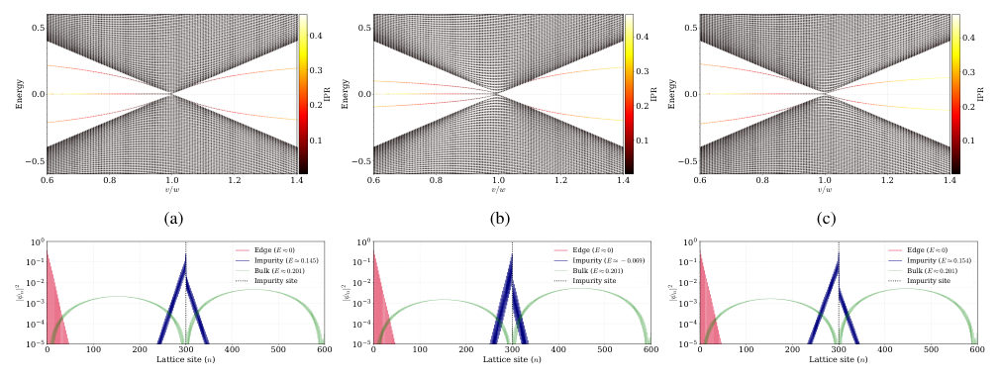
<figcaption class="paper-figure-caption"><b>Fig 1.</b> FIG. 1: Real energy spectra and spatial probability distributions for an open SSH chain (N = 300) hosting a single non-Hermitian defect, contrasting three distinct local configurations. (a)–(c) Real part of the energy spectrum as a function of the hopping ratio v/w (w = 1). Eigenstates are color-coded according to their inverse participation ratio (Iβ x ), resolving the degree of spatial localization across the continuum and within the gap. The top panels represent the following impurity hopping configuration: (a) hi = he = 0.3 and γi = γe = 0.05; (b) hi = 0.15, he = 0.3, γi = 0.075 and γe = 0.05; and (c) hi = 0.3, he = 0.2, γi = 0.05 and γe = 0.075. (d)–(f) Spatial probability density...</figcaption>
</figure>
<figure class="paper-figure-card">
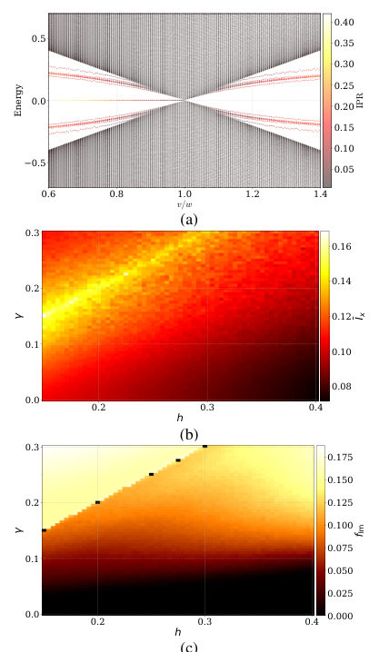
<figcaption class="paper-figure-caption"><b>Fig 2.</b> FIG. 2: Spectral and localization properties of the SSH chain subjected to a finite concentration of symmetrically configured non-Hermitian impurities (hi = he ≡h, γi = γe ≡γ). (a) Disorder-averaged real part of the energy spectrum (Nr = 150) as a function of v/w, evaluated at r = 1% with h = 0.3 and γ = 0.05. Eigenstates are color-coded by the corresponding Iβ x , revealing the formation of highly localized impurity mini-bands within the energy gap. (b) and (c) display heat maps of the disorder-averaged ¯Ix and fIm, respectively, mapped across the (h, γ) parameter space at r = 10% and v/w = 1 (Nr = 250).</figcaption>
</figure>
<figure class="paper-figure-card">
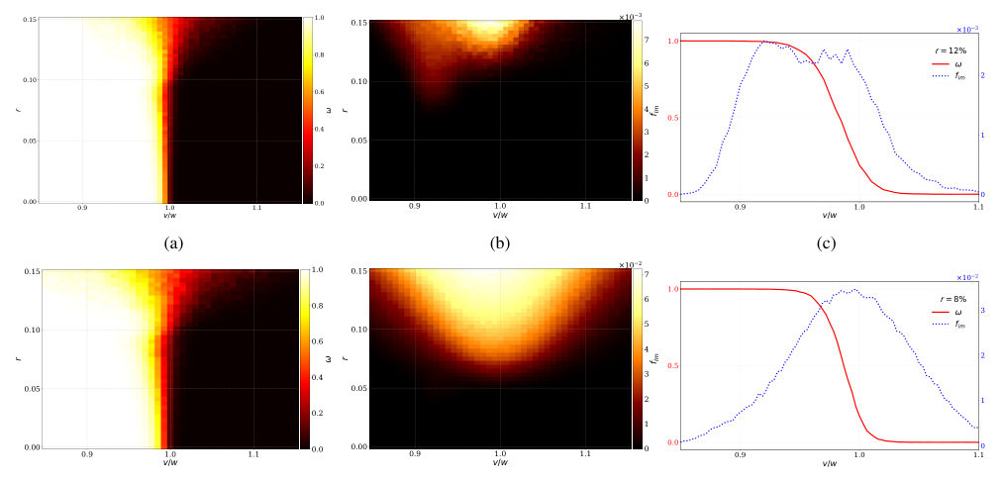
<figcaption class="paper-figure-caption"><b>Fig 3.</b> FIG. 3: Interplay between topology and non-Hermiticity in the disordered SSH chain. The structurally symmetric impurity parameters are fixed at h = 0.3, while the non-reciprocal strengths are set to γ = 0.05 (top row) and γ = 0.10 (bottom row). The left and middle columns display heat maps of the disorder-averaged real-space winding number ω (Nr = 250) and the complex spectrum fraction fIm (Nr = 750), respectively, mapped across the (v/w, r) parameter space. The rightmost column presents horizontal cross-sections of these phase diagrams at r = 12% and r = 8% respectively (Nr = 1000). The numerical noise visible in c) reflects the difficulty of achieving statistical convergence due to...</figcaption>
</figure>
<figure class="paper-figure-card">
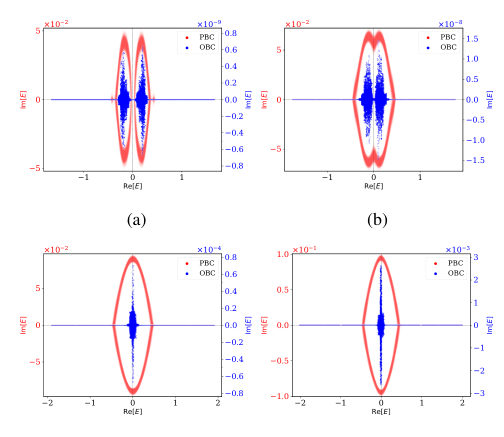
<figcaption class="paper-figure-caption"><b>Fig 4.</b> FIG. 4: Superimposed complex energy spectra for the symmetric impurity configuration (hi = he = 0.3, γe = γi = 0.1). To properly resolve the continuous density of states, 2000 independent random realizations are plotted together for a lattice of N = 1000 unit cells. We fix r = 20% to guarantee a macroscopic proliferation of complex eigenenergies. In alphabetic order, panels correspond to increasing hopping ratios v/w ∈{0.65, 0.75, 0.90, 1.0}, mapping the emergence of the complex phase previously identified in Fig. 3f. Red (blue) dots represent eigenvalues under Periodic (Open) Boundary Conditions. Notice the continuous deformation and coalescence of the disjoint PBC loops into a single...</figcaption>
</figure>
<figure class="paper-figure-card">
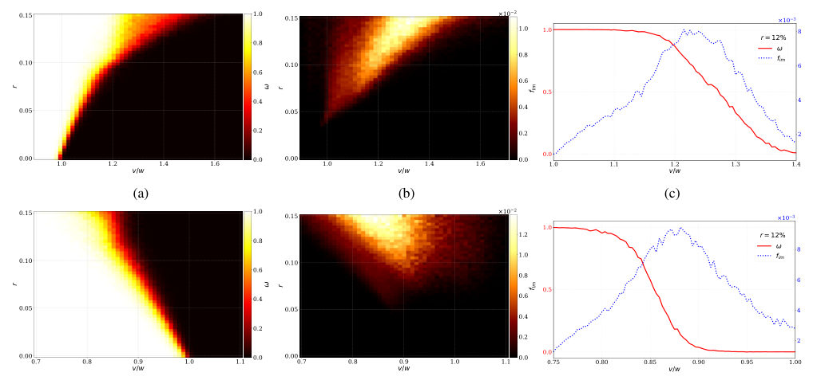
<figcaption class="paper-figure-caption"><b>Fig 5.</b> FIG. 5: Topological and spectral phase diagrams for asymmetric configurations. The left and middle columns display heat maps of the disorder-averaged real-space winding number ω (Nr = 250) and the complex spectrum fraction fIm (Nr = 750), respectively, mapped across the (v/w, r) parameter space. The rightmost column presents horizontal cross-sections at r = 12% (Nr = 1000). The top row illustrates a configuration favoring intercell connectivity (hi = 0.15, he = 0.3) alongside enhanced intracell non-reciprocity (γi = 0.075, γe = 0.05). Conversely, the bottom row depicts a configuration with suppressed intercell impurity hopping (hi = 0.3, he = 0.2) and enhanced intercell non-reciprocity (γi...</figcaption>
</figure>
</div>

<p><strong>Summary.</strong> This paper demonstrates a deterministic method to actively shift the topological phase boundaries in an SSH chain by introducing localized, non-Hermitian impurities with broken internal symmetry. By controlling the asymmetry of these defects, researchers can expand or compress the topological regime without relying on global disorder. The findings establish a powerful link between local structural asymmetry and macroscopic topological protection.</p>
<p><strong>Why it may be interesting.</strong> This work provides a concrete, controllable mechanism to engineer topological phases using engineered local asymmetries, which is highly relevant for designing synthetic quantum materials or controlling edge states in open quantum systems.</p>
<details>
<summary>Detailed structure</summary>
<p><strong>Main problem.</strong> The paper investigates how localized, non-Hermitian impurities can actively reconfigure the topological phase boundaries of a pristine Su-Schrieffer-Heeger (SSH) chain.</p>
<p><strong>Main result.</strong> Breaking the internal structural symmetry of non-reciprocal impurity hoppings induces a targeted macroscopic displacement of the critical point, allowing controlled manipulation of topological protection via local defect asymmetry.</p>
<p><strong>Method.</strong> The analysis employs finite-size scaling, real-space winding number calculations, and ensemble averaging over random impurity configurations to characterize the topological transitions.</p>
<p><strong>Model / system.</strong> The system is a one-dimensional SSH chain Hamiltonian modified by non-Hermitian, non-reciprocal substitutional impurities confined to specific unit cells. The bulk of the chain remains perfectly Hermitian.</p>
<p><strong>Key observables.</strong> Topological phase boundaries, correlation length critical exponents ($
u$), Non-Hermitian Skin Effect (NHSE), and the real-to-complex spectral transition.</p>
<p><strong>Important parameters / regimes.</strong> The concentration and asymmetry ($\gamma_i, \gamma_e$) of the non-Hermitian impurities are the key tuning parameters.</p>
<p><strong>Assumptions / limitations.</strong> The analysis assumes the bulk of the chain remains perfectly Hermitian and translationally invariant, while the impurities introduce localized, non-reciprocal perturbations.</p>
<p><strong>Figures summary.</strong> Figures illustrate the real energy spectra and spatial probability density profiles for single defects, showing how the impurity state shifts energy within the topological or trivial regimes.</p>
<p><strong>Paper structure.</strong> The paper progresses from defining the non-Hermitian SSH model to analyzing single defects, then extending to finite concentrations, and finally using finite-size scaling and statistical methods to quantify the deterministic shift of the critical point.</p>
</details>
<details>
<summary>Abstract</summary>
<p>We investigate the topological phase in a one-dimensional Su-Schrieffer-Heeger (SSH) chain in the presence of a finite concentration of non-Hermitian substitutional impurities. Our primary focus is the discovery of a deterministic mechanism to actively reconfigure the topological phase boundaries by introducing site-dependent, non-reciprocal intracell and intercell hopping amplitudes. Specifically, breaking the internal structural symmetry of the non-reciprocal impurity hoppings induces a targeted macroscopic displacement of the critical point. This mechanism allows for the controlled expansion or compression of the topological phase strictly via local defect asymmetry. We validate this boundary displacement through finite-size scaling analysis. The extracted correlation length critical exponents ($ν\approx 1.455$ and $ν\approx 1.397$ for symmetric and asymmetric configurations, respectively) confirm a disorder-induced departure from the pristine SSH universality class, with the exponent diverging at high defect densities. We also report an impurity-induced real-to-complex spectral transition geometrically characterized by the Non-Hermitian Skin Effect. Ultimately, our results establish how isolated non-Hermitian asymmetries cooperatively interact to deterministically shift macroscopic topological protection.</p>
</details>
<p><sub><a href="#top">↑ back to top</a></sub></p>

<p><a id="paper-2610.27338"></a></p>
<h3 id="assignment-maps-for-arbitrary-reduced-quantum-dynamics"><a href="http://arxiv.org/abs/2610.27338v1">Assignment maps for arbitrary reduced quantum dynamics</a></h3>
<p><strong>Authors:</strong> James Fullwood, Weixiang Ye<br>
<strong>Type:</strong> theory · <strong>Category:</strong> other · <strong>PDF:</strong> <a href="https://arxiv.org/pdf/2610.27338v1">https://arxiv.org/pdf/2610.27338v1</a><br>
<strong>Analysis basis:</strong> full PDF text, analyzed in chunks
<strong>Topic relevance:</strong> <code>correlated / nonlocal dissipation</code> <strong>3/5</strong> · <code>methods for driven-dissipative</code> <strong>3/5</strong> · <code>Keldysh / 2PI / non-Gaussian methods</code> <strong>2/5</strong> · <code>driven-dissipative phase transition</code> <strong>2/5</strong> · <code>quantum measurements</code> <strong>2/5</strong> · <code>non-equilibrium universality</code> <strong>1/5</strong></p>
<div class="figure-strip-hint">↔ Scroll figures horizontally</div>
<div class="paper-figures-scroll">
<figure class="paper-figure-card">
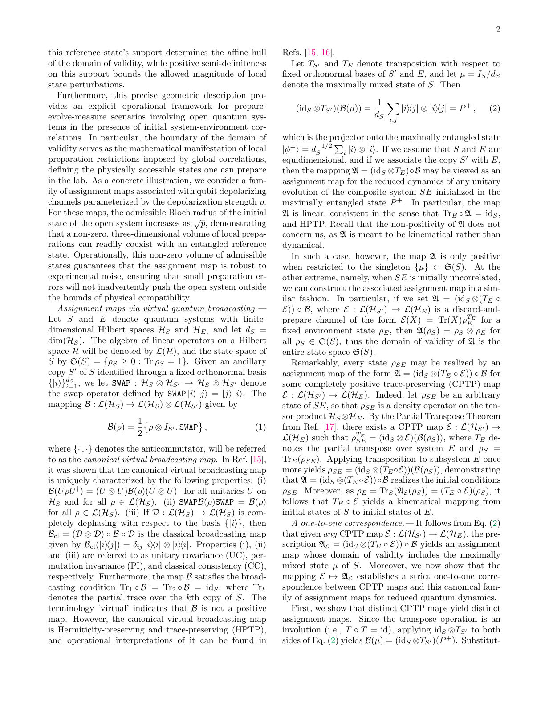
<figcaption class="paper-figure-caption"><b>Fig 1.</b> Low-resolution page preview, page 2</figcaption>
</figure>
<figure class="paper-figure-card">
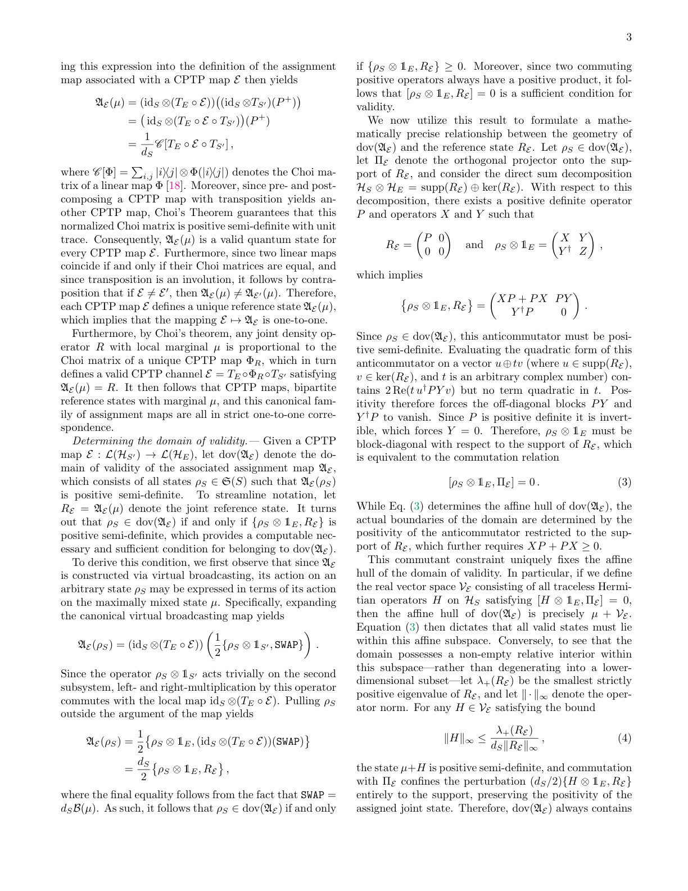
<figcaption class="paper-figure-caption"><b>Fig 2.</b> Low-resolution page preview, page 3</figcaption>
</figure>
<figure class="paper-figure-card">
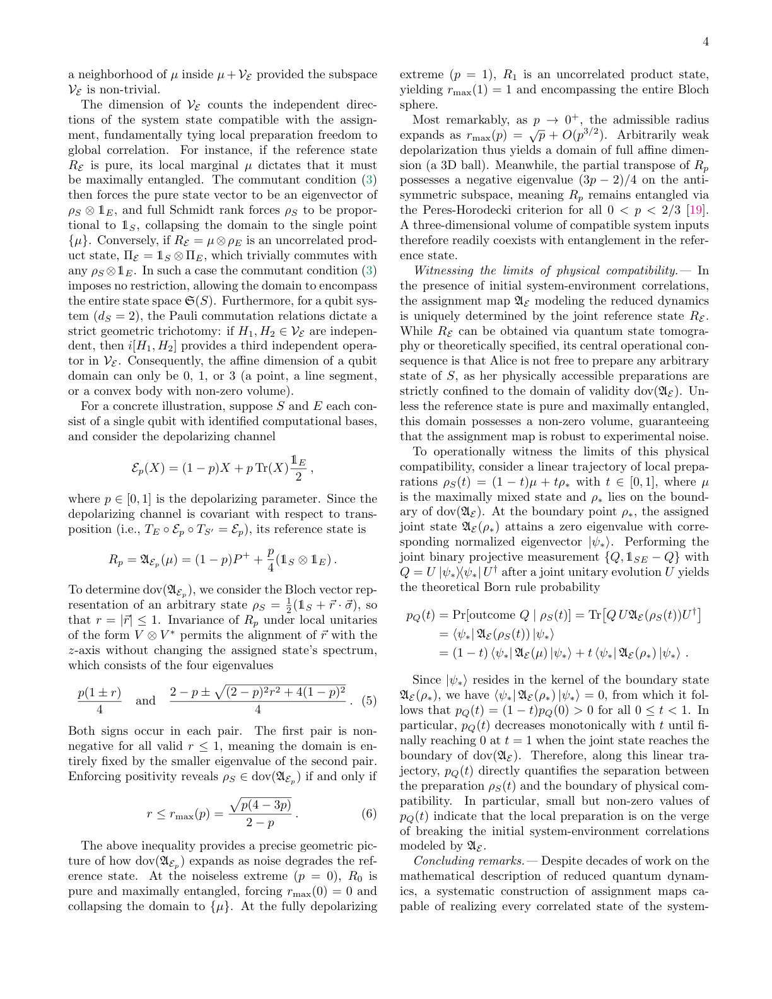
<figcaption class="paper-figure-caption"><b>Fig 3.</b> Low-resolution page preview, page 4</figcaption>
</figure>
<figure class="paper-figure-card">
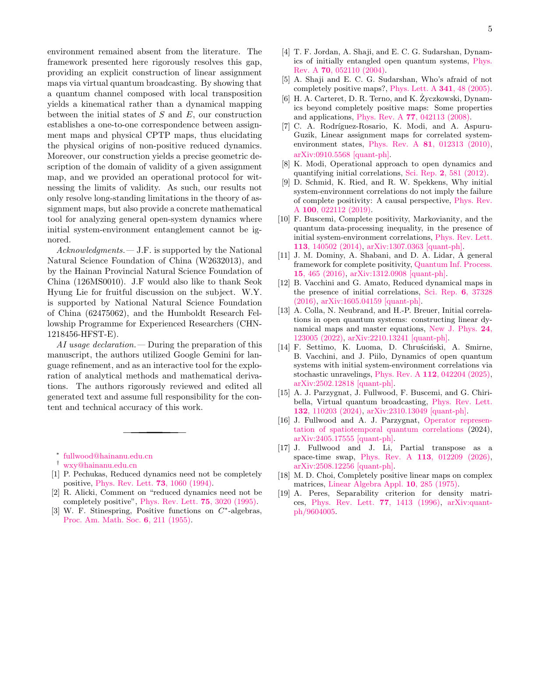
<figcaption class="paper-figure-caption"><b>Fig 4.</b> Low-resolution page preview, page 5</figcaption>
</figure>
</div>

<p><strong>Summary.</strong> This paper develops a general theory connecting standard reduced quantum dynamics (CPTP maps) to 'assignment maps' that account for initial correlations between the system and environment. It proves a one-to-one mapping between these two descriptions and rigorously characterizes the domain of local states that are physically accessible given initial entanglement. This resolves limitations in modeling open quantum systems by providing a precise geometric constraint on valid local preparations.</p>
<p><strong>Why it may be interesting.</strong> This work provides a rigorous mathematical tool to analyze open quantum systems beyond the standard assumption of product initial states, which is crucial for understanding realistic quantum dynamics.</p>
<details>
<summary>Detailed structure</summary>
<p><strong>Main problem.</strong> The paper aims to establish a systematic mathematical framework for describing reduced quantum dynamics in open systems when initial system-environment correlations are present.</p>
<p><strong>Main result.</strong> A one-to-one correspondence is established between physical CPTP maps and kinematical assignment maps, which are required to be Hermiticity-preserving and trace-preserving (HPTP).</p>
<p><strong>Method.</strong> The authors utilize the Choi matrix formalism and the concept of an 'assignment map' ($A$) acting as a reverse shift from the local system description to the global system-environment state.</p>
<p><strong>Model / system.</strong> The system involves an open quantum system $S$ interacting with an environment $E$. The dynamics are generally described by CPTP maps, but the analysis extends to initial correlations captured by a joint state $
ho_{SE}$.</p>
<p><strong>Key observables.</strong> The domain of validity ($  ext{dov}(A_E)$) of the assignment map, which dictates physically accessible local preparations.</p>
<p><strong>Important parameters / regimes.</strong> The joint reference state $R_E$ assigned to the maximally mixed input, which governs the geometry of the domain of validity.</p>
<p><strong>Assumptions / limitations.</strong> The approach requires treating the assignment map $A$ as kinematical rather than strictly dynamical, and the domain is determined by the positivity of the anticommutator involving the reference state.</p>
<p><strong>Paper structure.</strong> The paper builds the correspondence between CPTP maps and assignment maps, derives the necessary and sufficient condition for local state validity based on the reference state, and concludes with an operational protocol for testing these limits.</p>
</details>
<details>
<summary>Abstract</summary>
<p>Given an open quantum system $S$ with environment $E$, we establish a one-to-one correspondence between completely positive trace-preserving (CPTP) maps from $S$ to $E$ and assignment maps initializing the composite system $SE$ in a possibly correlated state prior to unitary evolution. We show that every possible joint state $ρ_{SE}$ can be realized by such assignment maps, which are inherently Hermiticity-preserving and trace-preserving (HPTP). While these maps sacrifice global positivity, we derive a simple necessary and sufficient condition for any local state of $S$ to belong to their domain of validity. Furthermore, we prove that the geometry of this domain is governed by the joint state assigned to the maximally mixed input, ensuring that a non-zero volume of admissible local states can readily coexist with initial system-environment entanglement. Finally, we provide an operational protocol for witnessing such limits of validity.</p>
</details>
<p><sub><a href="#top">↑ back to top</a></sub></p>

<p><a id="paper-2610.28017"></a></p>
<h3 id="relativistic-strong-quantum-mpemba-effect"><a href="http://arxiv.org/abs/2610.28017v1">Relativistic Strong Quantum Mpemba Effect</a></h3>
<p><strong>Authors:</strong> Zhilong Liu, Zehua Tian, Hui Jing, Jieci Wang<br>
<strong>Type:</strong> theory · <strong>Category:</strong> statistical mechanics · <strong>PDF:</strong> <a href="https://arxiv.org/pdf/2610.28017v1">https://arxiv.org/pdf/2610.28017v1</a><br>
<strong>Analysis basis:</strong> full PDF text, analyzed in chunks
<strong>Topic relevance:</strong> <code>non-equilibrium universality</code> <strong>3/5</strong> · <code>scars &amp; prethermalization</code> <strong>3/5</strong> · <code>Keldysh / 2PI / non-Gaussian methods</code> <strong>2/5</strong> · <code>methods for driven-dissipative</code> <strong>2/5</strong> · <code>correlated / nonlocal dissipation</code> <strong>1/5</strong> · <code>driven-dissipative phase transition</code> <strong>1/5</strong> · <code>quantum measurements</code> <strong>1/5</strong></p>
<div class="figure-strip-hint">↔ Scroll figures horizontally</div>
<div class="paper-figures-scroll">
<figure class="paper-figure-card">
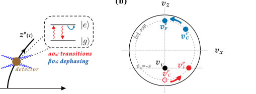
<figcaption class="paper-figure-caption"><b>Fig 1.</b> FIG. 1. Model diagram and strong-Mpemba state preparation. (a) A uniformly accelerated two-level detector follows the worldline zµ(τ) and interacts with the scalar field. (b) Isospectral state preparation on a fixed-purity Bloch orbit |v| = m. Both in the population-limited regime (red) and the coherence-limited regime (blue), the unitary rotation vC →vF eliminates the slowest mode weight. Open and filled circles denote the reference and optimized initial states, respectively.</figcaption>
</figure>
<figure class="paper-figure-card">
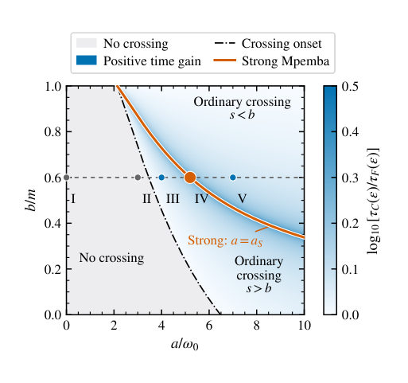
<figcaption class="paper-figure-caption"><b>Fig 2.</b> FIG. 2. Emergence of strong Mpemba effect. Blue shading shows log10[τC(ε)/τF (ε)], where τi is the first time at which Di T ≤ε. Gray denotes no crossing. The black dash- dotted curve marks crossing onset; the orange curve b = s marks exact slow-mode cancellation. The horizontal cut is at b/m = 0.6. m=0.9, κ = 2, and ε = 10−4.</figcaption>
</figure>
<figure class="paper-figure-card">
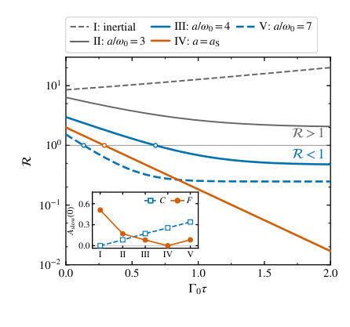
<figcaption class="paper-figure-caption"><b>Fig 3.</b> FIG. 3. Relaxation dynamics and suppression of the slow mode. Cases I–V correspond to a/ω0=0,3,4,aS/ω0,7, respectively, with aS/ω0 = π/ artanh b. Open circles mark crossings of R=1. Inset: initial slow-subspace amplitudes Aslow(0). m=0.9, b=0.54, and κ = 2.</figcaption>
</figure>
<figure class="paper-figure-card">
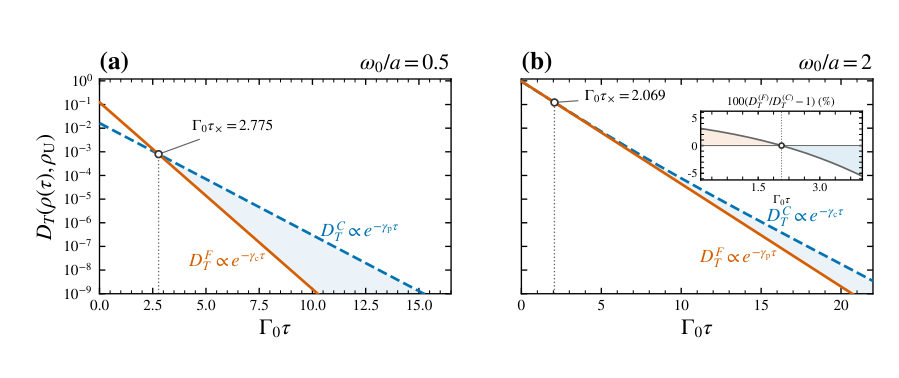
<figcaption class="paper-figure-caption"><b>Fig 4.</b> FIG. 4. Genuine strong-Mpemba crossings on a fixed unitary orbit. Trace distance to ρU for κ = 2 and m = 0.95. (a) At ω0/a = 0.50. (b) At ω0/a = 2 and θ = 0.50. The inset shows the signed relative difference 100(DF T −DC T )/DC T near the crossing. Dots and vertical lines denote the analytical crossings.</figcaption>
</figure>
<figure class="paper-figure-card">
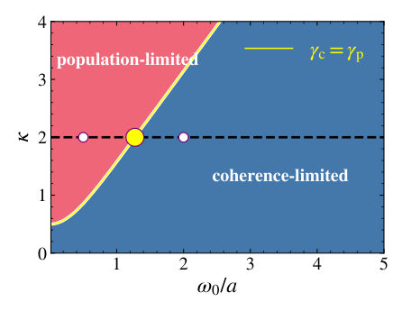
<figcaption class="paper-figure-caption"><b>Fig 5.</b> FIG. 5. Acceleration and coupling select the strong- Mpemba protocol. Population-limited (red) and coherence- limited (blue) regimes in the (ω0/a, κ) plane, separated by γc = γp (yellow). The dashed line marks κ = 2; the yellow dot marks the corresponding spectral switch. Open circles mark the parameters used in Fig. 4(a) (left) and (b) (right).</figcaption>
</figure>
</div>

<p><strong>Summary.</strong> This theoretical paper demonstrates a strong quantum Mpemba effect in the context of Unruh thermalization for a two-level detector. By analyzing the competition between population and coherence decay channels, the authors show that acceleration acts as a control parameter. This allows for the engineering of anomalous quantum relaxation, accelerating the system's approach to equilibrium.</p>
<p><strong>Why it may be interesting.</strong> This work directly connects relativistic quantum dynamics (Unruh effect) with non-equilibrium thermodynamics by showing how external parameters (acceleration) can fundamentally alter the approach to thermal equilibrium, a key topic in statistical mechanics.</p>
<details>
<summary>Detailed structure</summary>
<p><strong>Main problem.</strong> The paper investigates whether acceleration can act as a control parameter to induce a relativistic strong quantum Mpemba effect during Unruh thermalization.</p>
<p><strong>Main result.</strong> A strong Mpemba crossing is demonstrated at a precisely tuned acceleration ($a_S$), where the initially farther state achieves a faster asymptotic decay rate by eliminating slow-mode contributions.</p>
<p><strong>Method.</strong> The analysis uses the Born-Markov approximation on the Lindblad master equation, decomposing the dynamics into population and coherence decay channels.</p>
<p><strong>Model / system.</strong> The system is a two-level detector coupled to a massless scalar field, undergoing uniform proper acceleration ($a$) in the Minkowski vacuum.</p>
<p><strong>Key observables.</strong> Trace distance to the Unruh Gibbs state ($D_T$), the ratio of trace distances ($R$), and the decay rates ($\gamma_p, \gamma_c$).</p>
<p><strong>Important parameters / regimes.</strong> Acceleration ($a$), coupling parameters ($\alpha, eta$), and the ratio $\chi = \gamma_c / \gamma_p$.</p>
<p><strong>Assumptions / limitations.</strong> The analysis relies on the weak-coupling Born-Markov and secular approximations, and the decomposition of the Liouvillian spectrum.</p>
<p><strong>Figures summary.</strong> Figures illustrate the emergence of the strong Mpemba effect, comparing decay rates, and mapping the parameter space showing the boundaries between population-limited and coherence-limited relaxation regimes.</p>
<p><strong>Paper structure.</strong> The paper progresses by establishing the model dynamics, analyzing the slow-mode sector via the ratio $\chi$, deriving the conditions for the strong Mpemba effect, and constructing protocols to exploit acceleration as a control parameter.</p>
</details>
<details>
<summary>Abstract</summary>
<p>The Unruh effect links acceleration to thermalization, providing a relativistic setting for anomalous quantum relaxation. We demonstrate a {\it relativistic} strong quantum Mpemba effect in the Unruh thermalization of a two-level detector coupled to a massless scalar field. For a fixed pair of isospectral initial states, relaxation curves that never cross in inertial motion exhibit a Mpemba crossing above a threshold acceleration. At a higher, precisely tuned acceleration, the initially farther state has zero overlap with the slowest decay mode and relaxes with a faster asymptotic exponential rate. We identify how competition between transition and dephasing channels governs the relaxation spectrum, where sufficiently strong longitudinal coupling enables acceleration to switch the relaxation bottleneck between population and coherence modes. We derive the spectral-switching condition and construct isospectral preparation protocols that eliminate slow-mode contributions within their physical domains. These protocols reveal how coherence can suppress or enhance slow-mode overlap at fixed purity, depending on the underlying spectral structure. Our results establish acceleration as a control parameter for anomalous quantum relaxation, connecting relativistic quantum dynamics with nonequilibrium thermodynamics.</p>
</details>
<p><sub><a href="#top">↑ back to top</a></sub></p>

<p><a id="paper-2610.28415"></a></p>
<h3 id="chaos-and-scrambling-in-anisotropic-dicke-and-rabi-models"><a href="http://arxiv.org/abs/2610.28415v1">Chaos and scrambling in anisotropic Dicke and Rabi models</a></h3>
<p><strong>Authors:</strong> Long-Jie Li, Li-Li Gao, Zi-Cheng Liu, Zi-Min Li, Murray T. Batchelor<br>
<strong>Type:</strong> theory · <strong>Category:</strong> other · <strong>PDF:</strong> <a href="https://arxiv.org/pdf/2610.28415v1">https://arxiv.org/pdf/2610.28415v1</a><br>
<strong>Analysis basis:</strong> full PDF text, analyzed in chunks
<strong>Topic relevance:</strong> <code>Tavis-Cummings &amp; cavity-many-emitter</code> <strong>3/5</strong> · <code>Keldysh / 2PI / non-Gaussian methods</code> <strong>2/5</strong> · <code>analog quantum simulation</code> <strong>2/5</strong> · <code>Dicke superradiance</code> <strong>1/5</strong> · <code>correlated / nonlocal dissipation</code> <strong>1/5</strong> · <code>driven-dissipative phase transition</code> <strong>1/5</strong> · <code>methods for driven-dissipative</code> <strong>1/5</strong> · <code>non-equilibrium universality</code> <strong>1/5</strong></p>
<div class="figure-strip-hint">↔ Scroll figures horizontally</div>
<div class="paper-figures-scroll">
<figure class="paper-figure-card">
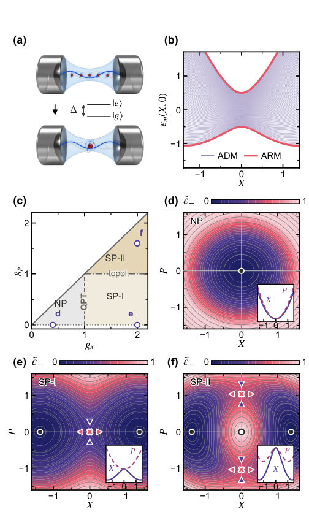
<figcaption class="paper-figure-caption"><b>Fig 1.</b> FIG. 1. Shared adiabatic geometry and inequivalent branch structure. (a) Many-atom ADM (top) and single-atom ARM (bottom). (b) Adiabatic branches along P = 0 at (gx, gp) = (2, 0). The thermodynamic ADM fills a continuous purple band, whereas the ARM has only two red branches. (c) Coupling-plane phases: the dashed gx = 1 boundary marks the QPT, and the dash-dotted gp = 1 boundary marks the stationary-point topology change. (d)–(f) Lowest adiabatic surface in the NP, SP-I, and SP-II, at (gx, gp) = (0.4, 0), (2, 0), and (2, 1.6), as marked in (c). Colors show the separately normalized display energy ˜ϵ−. Filled dark circles, red crosses, and the open circle at the SP-II origin denote minima,...</figcaption>
</figure>
<figure class="paper-figure-card">
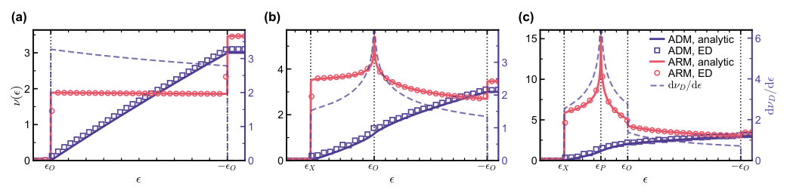
<figcaption class="paper-figure-caption"><b>Fig 2.</b> FIG. 2. Effective densities of states of the ADM and ARM in (a) the NP, (b) SP-I, and (c) SP-II, at (gx, gp) = (0.4, 0), (2, 0), and (2, 1.6), respectively. The reduced energy is ϵ = E/(N∆), and the density per unit physical energy is ν(ϵ) = νE(N∆ϵ) = νϵ(ϵ)/(N∆). Solid curves and open symbols show the analytical results of Appendix A and exact diagonalization, respectively; dashed curves show dνD/dϵ on the right axis. Vertical dotted lines mark the stationary-point energies of Eq. (11). Parameters are N = 30, η = 1, and 200 Fock states for the ADM, and N = 1, η = 300, and 2000 Fock states for the ARM.</figcaption>
</figure>
<figure class="paper-figure-card">
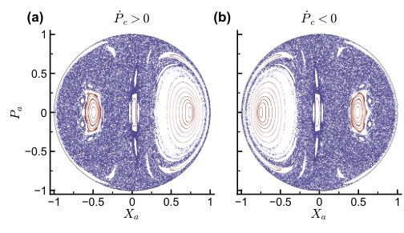
<figcaption class="paper-figure-caption"><b>Fig 3.</b> FIG. 3. Atomic-coordinate Poincar´e sections of the ADM at hD = 2.75, (gx, gp) = (2, 1.1), and η = 1. Returns to Pc = 0 are projected onto the (Xa, Pa) plane for (a) ˙Pc &gt; 0 and (b) ˙Pc &lt; 0. Purple and brown points denote selected chaotic and numerically regular trajectories, respectively, classified by finite-time Lyapunov growth. Regular invariant curves coexist with a chaotic sea. The thin gray circle marks the atomic-coordinate boundary X2 a + P 2 a = 1.</figcaption>
</figure>
<figure class="paper-figure-card">
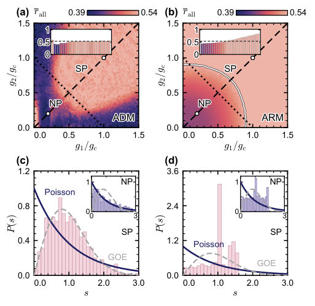
<figcaption class="paper-figure-caption"><b>Fig 4.</b> FIG. 4. Even-parity spectral statistics of the ADM (a,c) and ARM (b,d). (a,b) Mean adjacent-spacing ratio rall over the lowest 103 levels. Upper-left insets show its dependence along g1 = g2 = g for g/gc = 0.05, 0.10, . . . , 1.50, with bar colors following the parent map’s clipped scale; horizontal dashed lines mark the GOE reference. The dashed diagonal is g1 = g2, the dotted boundary is g1 + g2 = gc, and the white contour in (b) denotes rall = rGOE. White circles mark the NP and SP samples at (g1/gc, g2/gc) = (0.2, 0.2) and (1, 1), respectively, as in Fig. 5. (c,d) Locally unfolded spacing distributions at the SP samples (pale-pink main histograms), with NP samples in the pale-purple...</figcaption>
</figure>
<figure class="paper-figure-card">
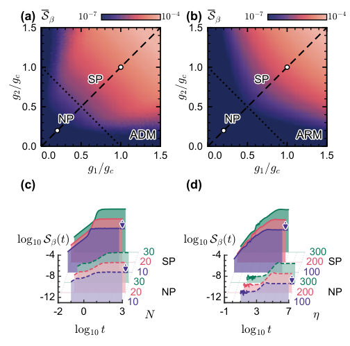
<figcaption class="paper-figure-caption"><b>Fig 5.</b> FIG. 5. Thermal scrambling of the ADM (a,c) and ARM (b,d) at βN∆= 1. (a,b) Coupling-plane maps of Sβ on a shared logarithmic color scale. The dotted boundary is g1 +g2 = gc, and the dashed diagonal is g1 = g2. White circles mark the NP and SP samples at (g1/gc, g2/gc) = (0.2, 0.2) and (1, 1), respectively. (c,d) Waterfall traces of Sβ(t) at these samples. The ADM traces use N = 10, 20, 30 at η = 1, with 200, 400, 500 Fock states, respectively; the ARM traces use η = 100, 200, 300 at N = 1, with 2000, 3000, 5000 Fock states, respectively. Purple, red, and green denote the three conditions in order. Front dashed and back solid curves represent NP and SP. Purple arrows identify the...</figcaption>
</figure>
</div>

<p><strong>Summary.</strong> This paper investigates the relationship between classical chaos and quantum scrambling in the Anisotropic Dicke and Rabi models. By comparing the two models across different physical limits, the authors find that while both exhibit scrambling, the correspondence with classical chaos breaks down in the Rabi model. This suggests that a complete characterization of quantum chaos requires considering both the classical degrees of freedom and quantum delocalization.</p>
<p><strong>Why it may be interesting.</strong> This work directly addresses the fundamental question of how quantum chaos manifests in interacting quantum systems, providing a nuanced understanding that simple measures like delocalization are insufficient.</p>
<details>
<summary>Detailed structure</summary>
<p><strong>Main problem.</strong> The central goal is to identify the quantum signatures of classical chaos and determine the precise correspondence between chaos and quantum scrambling in light-matter interaction models.</p>
<p><strong>Main result.</strong> The correspondence between chaos and scrambling differs between the two models; specifically, scrambling (indicated by OTOCs) can occur in the Anisotropic Rabi Model (ARM) even when the system lacks the classical chaotic structure found in the Anisotropic Dicke Model (ADM).</p>
<p><strong>Method.</strong> The study employs semiclassical analysis, examining adiabatic energy surfaces, spectral statistics (GOE distribution), and quantum information measures like Out-of-Time-Order Correlators (OTOCs) and participation ratios.</p>
<p><strong>Model / system.</strong> The research focuses on the Anisotropic Dicke Model (ADM) and the Anisotropic Rabi Model (ARM), both describing light-matter coupling. The analysis compares the ADM in the thermodynamic limit to the ARM in the large-frequency-ratio limit.</p>
<p><strong>Key observables.</strong> Spectral statistics (GOE distribution), Thermal Out-of-Time-Order Correlators (OTOCs), and Thermally weighted participation ratio (PR).</p>
<p><strong>Important parameters / regimes.</strong> The analysis compares regimes such as the Normal Phase (NP) and Superradiant Phases (SP-I, SP-II), and examines the limits $N 	o \infty$ (ADM) and $\eta 	o \infty$ (ARM).</p>
<p><strong>Assumptions / limitations.</strong> The analysis assumes that the shared adiabatic energy surfaces provide a basis for comparison, but it also notes that eigenstate delocalization alone is insufficient to prove classical chaos.</p>
<p><strong>Figures summary.</strong> Figures illustrate the shared adiabatic geometry and differing branch structures for ADM and ARM, and Poincaré sections show the mixed phase space structure of the ADM.</p>
<p><strong>Paper structure.</strong> The paper systematically compares the ADM and ARM across different limits, using spectral statistics and OTOCs to diagnose chaos and scrambling, ultimately contrasting the findings from the two models.</p>
</details>
<details>
<summary>Abstract</summary>
<p>Identifying the quantum signatures of classical chaos remains a central question in quantum physics, and quantum scrambling provides a new perspective on this correspondence. We study two distinct limits of the same model to examine how the correspondence between chaos and scrambling changes across different regimes. The thermodynamic-limit anisotropic Dicke model exhibits a close correspondence between chaos and scrambling, whereas this correspondence breaks down in the large-frequency-ratio limit of the anisotropic Rabi model (ARM). The contrasting chaotic behavior in the two limits originates from the different numbers of classical degrees of freedom, whereas their similar scrambling behavior stems from eigenstate delocalization. This implies that, in the large-frequency-ratio limit, eigenstate delocalization alone is insufficient to qualify the ARM as a classically chaotic model. This finding suggests that identifying chaos in quantum systems requires jointly considering the classical degrees of freedom and eigenstate delocalization.</p>
</details>
<p><sub><a href="#top">↑ back to top</a></sub></p>

<p><a id="paper-2610.28148"></a></p>
<h3 id="field-theories-and-critical-excitations-at-anyon-condensation-transitions"><a href="http://arxiv.org/abs/2610.28148v1">Field theories and critical excitations at anyon condensation transitions</a></h3>
<p><strong>Authors:</strong> Luisa Eck, Xie Chen<br>
<strong>Type:</strong> theory · <strong>Category:</strong> statistical mechanics · <strong>PDF:</strong> <a href="https://arxiv.org/pdf/2610.28148v1">https://arxiv.org/pdf/2610.28148v1</a><br>
<strong>Analysis basis:</strong> full PDF text, analyzed in chunks
<strong>Topic relevance:</strong> <code>analog quantum simulation</code> <strong>3/5</strong> · <code>Keldysh / 2PI / non-Gaussian methods</code> <strong>2/5</strong> · <code>driven-dissipative phase transition</code> <strong>2/5</strong> · <code>methods for driven-dissipative</code> <strong>2/5</strong> · <code>non-equilibrium universality</code> <strong>2/5</strong> · <code>correlated / nonlocal dissipation</code> <strong>1/5</strong></p>
<div class="figure-strip-hint">↔ Scroll figures horizontally</div>
<div class="paper-figures-scroll">
<figure class="paper-figure-card">

<figcaption class="paper-figure-caption"><b>Fig 1.</b> FIG. 1. (a) Order two and (b) order three fusion trees of the condensing anyons that fuse into the trivial anyon 1.</figcaption>
</figure>
<figure class="paper-figure-card">

<figcaption class="paper-figure-caption"><b>Fig 2.</b> FIG. 2. Schematic behaviour of topological defects across a continuous transition. In the gapped phases on the two sides of the critical point, defects are either condensed or gapped. At the critical point, some defects remain condensed, some remain gapped, while others become critical.</figcaption>
</figure>
<figure class="paper-figure-card">

<figcaption class="paper-figure-caption"><b>Fig 3.</b> FIG. 3. Expectation values of loop operators in the four lowest energy states n = 0, 1, 2, 3 in the toric code topological phase at a) hx = 0.3, hz = 0.1 and b) hx = hz = 0.3. Markers show exact diagonalization data for L = 2, 3, 4, lines are for guidance.</figcaption>
</figure>
<figure class="paper-figure-card">

<figcaption class="paper-figure-caption"><b>Fig 4.</b> FIG. 4. Scaled energy gaps L∆i of the three excited levels originating from the toric code ground states on L × L tori, at fixed hz = 0.1. Markers show exact diagonalization data for L = 2, 3, 4, lines are for guidance.</figcaption>
</figure>
<figure class="paper-figure-card">

<figcaption class="paper-figure-caption"><b>Fig 5.</b> FIG. 5. Scaled energy gaps L∆i of the three excited levels originating from the toric code ground states on L × L tori, along the self-dual line hx = hz = h. Markers show exact diagonalization data for L = 2, 3, 4, lines are for guidance.</figcaption>
</figure>
</div>

<p><strong>Summary.</strong> This paper develops advanced field-theoretic tools to characterize anyon condensation transitions in 2+1D topological systems, especially when non-abelian anyons are involved. It proposes adapting the Ginzburg-Landau framework and provides a diagnostic criterion based on the criticality of topological excitations. This work advances the mathematical understanding of how topological order dictates the nature of quantum phase transitions.</p>
<p><strong>Why it may be interesting.</strong> The rigorous connection between topological order (a core concept in condensed matter theory) and continuum field theory descriptions of phase transitions is highly relevant for understanding exotic quantum states in AMO systems.</p>
<details>
<summary>Detailed structure</summary>
<p><strong>Main problem.</strong> The paper aims to characterize anyon condensation transitions, particularly in the challenging case where the condensing anyons are non-abelian.</p>
<p><strong>Main result.</strong> It develops two complementary theoretical approaches: adapting a Ginzburg-Landau procedure for 2+1D transitions and establishing a criterion to identify critical point and loop excitations.</p>
<p><strong>Method.</strong> The methods involve deriving effective Lagrangian terms from the categorical data of the parent topological order using fusion trees, and analyzing the gap closing of excitations.</p>
<p><strong>Model / system.</strong> The study focuses on 2+1 dimensional topological phases characterized by anyonic excitations, modeling transitions driven by the condensation of these anyons (e.g., in systems related to $Z_2$ or $S_3$ symmetries).</p>
<p><strong>Key observables.</strong> The form of the effective Lagrangian ($L$), the nature of critical point/loop excitations, and the universality class of the transition (e.g., Ising universality class).</p>
<p><strong>Important parameters / regimes.</strong> The quantum dimensions of the condensing anyons, and the dimensionality (2+1D) of the system.</p>
<p><strong>Assumptions / limitations.</strong> The Ginzburg-Landau procedure is assumed applicable when condensing anyons have integer quantum dimensions; the analysis often assumes the transition is driven by the condensation of a specific subset of anyons.</p>
<p><strong>Figures summary.</strong> Figure 1 illustrates order two and order three fusion trees of condensing anyons fusing into the trivial anyon 1.</p>
<p><strong>Paper structure.</strong> The paper progresses by first introducing the general problem, then detailing the Ginzburg-Landau adaptation for 2+1D, followed by the criterion for identifying critical excitations, and illustrating these proposals with several abelian and non-abelian examples.</p>
</details>
<details>
<summary>Abstract</summary>
<p>Anyon condensation transitions remain challenging to characterize especially when the condensing anyons are non-abelian. We develop two complementary approaches for extracting information about the transition from the categorical data of the parent topological order and the condensate. The first adapts a Ginzburg-Landau procedure developed for $1+1$D transitions in the SymTFT setting to $2+1$D anyon condensation transitions. The construction applies when the anyons participating in the condensate have integer quantum dimensions. The second gives a criterion for identifying which point and loop excitations become critical at a continuous transition. The key step is to determine which anyon loops remain condensed throughout. All other loops become critical, while a point excitation becomes critical if it braids trivially with every condensed loop. We illustrate both proposals in several abelian and non-abelian examples.</p>
</details>
<p><sub><a href="#top">↑ back to top</a></sub></p>

<p><a id="paper-2610.27529"></a></p>
<h3 id="collision-aware-bayesian-mitigation-of-photon-loss-in-linear-optical-quantum-circuits"><a href="http://arxiv.org/abs/2610.27529v1">Collision-aware Bayesian mitigation of photon loss in linear optical quantum circuits</a></h3>
<p><strong>Authors:</strong> Seungwoo Kim, Seunghyun Ahn, Donguk Nam, Hyunho Cha, Jungwoo Lee<br>
<strong>Type:</strong> theory · <strong>Category:</strong> quantum information and computing · <strong>PDF:</strong> <a href="https://arxiv.org/pdf/2610.27529v1">https://arxiv.org/pdf/2610.27529v1</a><br>
<strong>Analysis basis:</strong> full PDF text, analyzed in chunks
<strong>Topic relevance:</strong> <code>Full counting statistics</code> <strong>3/5</strong> · <code>methods for driven-dissipative</code> <strong>2/5</strong> · <code>quantum measurements</code> <strong>2/5</strong> · <code>analog quantum simulation</code> <strong>1/5</strong> · <code>correlated / nonlocal dissipation</code> <strong>1/5</strong> · <code>interference shaping light</code> <strong>1/5</strong> · <code>quantum optics experiment</code> <strong>1/5</strong></p>
<div class="figure-strip-hint">↔ Scroll figures horizontally</div>
<div class="paper-figures-scroll">
<figure class="paper-figure-card">

<figcaption class="paper-figure-caption"><b>Fig 1.</b> Figure 1: No-collision headline (n = 4, m = 20, N = 105, R = 30): KL divergence on the NC subspace vs. loss rate η, under Perceval-generated data. Solid = V = 1.0; dashed = V = 0.8. Both slices are misspecified for the no-collision likelihood, which omits collision patterns (App. B); at V = 0.8 the lossless target also moves from p∗to pV (App. C). The Bayesian posterior (blue) is lowest at every η under both slices; postselection (red) crosses up as its effective sample count collapses (at high loss its KL mostly reflects the 1/N floor applied to its many zero estimates; Sec. 4.3), and the recycling estimator (green) exhibits an error plateau at the tested sample budget. Shaded band: 95%...</figcaption>
</figure>
<figure class="paper-figure-card">

<figcaption class="paper-figure-caption"><b>Fig 2.</b> Figure 2: KL against the ideal p∗vs. indistinguishability V (NC n = 4, m = 20, N = 105, R = 30). Both the Bayesian posterior and postselection degrade smoothly as V decreases from 1.0 to 0.8; the Bayesian curve keeps its margin. Neither method models V , so both target the partially distinguishable distribution pV , and the rise largely reflects the distance between pV and p∗(App. C).</figcaption>
</figure>
<figure class="paper-figure-card">

<figcaption class="paper-figure-caption"><b>Fig 3.</b> Figure 3: KL divergence vs. sample count N on the no-collision track (n = 4, m = 20, Perceval data, the same R = 30 Haar unitaries at every N; the N = 105 points are the headline runs). Points: mean; bars: 95% percentile-bootstrap CI. Dashed: uninformed uniform guess p = 1/K. Recycling plateaus from N ≈2 × 104</figcaption>
</figure>
<figure class="paper-figure-card">

<figcaption class="paper-figure-caption"><b>Fig 4.</b> Figure 4: KL divergence vs. sample count N on the collision-aware track (n = 4, m = 10, Perceval data, the same R = 30 Haar unitaries at every N; the N = 105 points are the runs of Table 2), on the NC subspace. Points: mean; bars: 95% percentile-bootstrap CI. Dashed: uninformed uniform guess on the NC subspace. The posterior is shown only up to the largest N at which NUTS converged (2 × 105 at η = 0.3, 5 × 105 at η = 0.7); the baselines up to 106. At η = 0.7 the postselection KL at small N is set by the 1/N floor applied to its zero estimates.</figcaption>
</figure>
<figure class="paper-figure-card">

<figcaption class="paper-figure-caption"><b>Fig 5.</b> Figure 5: Collision-aware regime (n = 4, m = 10, N = 105, R = 30): KL on the NC subspace vs. η under Perceval data. Solid V = 1.0, dashed V = 0.8. The Bayesian posterior (blue) is lowest at every η except η = 0.3, V = 0.8, where postselection is marginally lower (Sec. 4.4); postselection (red) collapses at high loss; the recycling estimator (green) stays well above the posterior and cannot represent the collision components at all.</figcaption>
</figure>
</div>

<p><strong>Summary.</strong> This paper introduces a novel, collision-aware Bayesian method to mitigate photon loss in linear optical quantum circuits. By modeling raw counts as Multinomial observations, the authors jointly infer the ideal quantum state distribution and the loss rate. This approach surpasses existing techniques by accurately handling collision patterns and providing robust uncertainty estimates.</p>
<p><strong>Why it may be interesting.</strong> This work directly addresses a critical experimental bottleneck in photonic quantum computation by providing a statistically rigorous method to extract ideal quantum process information from noisy, lossy measurements.</p>
<details>
<summary>Detailed structure</summary>
<p><strong>Main problem.</strong> Photon loss is the dominant noise source in linear optical quantum circuits, causing detector counts to deviate from the ideal output distribution, making lossless events exponentially rare.</p>
<p><strong>Main result.</strong> The proposed collision-aware Bayesian mitigation method outperforms existing techniques (recycling and postselection) by accurately estimating the ideal distribution even in the collision regime and providing uncertainty quantification.</p>
<p><strong>Method.</strong> The authors employ a Bayesian inference framework, treating raw lossy counts as Multinomial observations under a per-photon binomial loss model to jointly infer the ideal output distribution and the loss rate.</p>
<p><strong>Model / system.</strong> The study analyzes linear optical quantum circuits, specifically simulating Boson Sampling with $n$ indistinguishable photons passing through an $m$-mode interferometer. The loss is modeled as an independent per-photon Bernoulli channel.</p>
<p><strong>Key observables.</strong> KL divergence, loss rate ($\eta$), collision-pattern probabilities, and credible intervals.</p>
<p><strong>Important parameters / regimes.</strong> Number of photons ($n$), number of modes ($m$), loss rate ($\eta$), and collision-pattern structure.</p>
<p><strong>Assumptions / limitations.</strong> The primary assumption is that the raw counts can be modeled as Multinomial observations under a per-photon binomial loss, allowing for a joint Bayesian inference.</p>
<p><strong>Figures summary.</strong> Figures compare the performance (e.g., KL divergence) of the proposed method against recycling and postselection across various loss rates and test for robustness against multiphoton emission and partial distinguishability.</p>
<p><strong>Paper structure.</strong> The paper introduces the problem of photon loss in linear optics, details the limitations of existing mitigation techniques (recycling, postselection), develops the collision-aware Bayesian framework, and validates its performance against various noise models and benchmarks.</p>
</details>
<details>
<summary>Abstract</summary>
<p>Photon loss is the dominant noise source in linear optical quantum circuits. Each lost photon turns an ideal n-photon outcome into a pattern with fewer photons, so the detector counts no longer follow the ideal output distribution, and the lossless events that do follow it become exponentially rare as the photon number grows. Discarding the lossy events (postselection) therefore wastes most of the data at realistic loss rates, and the ideal distribution has to be inferred from the lossy counts themselves. Recycling-based mitigation (Mills &amp; Mezher, Quantum 2026; Quandela's photon_recycling) reweights lossy samples to recover lossless probabilities, but its estimators are biased and restricted to the no-collision sector, where each output mode holds at most one photon. We instead treat the raw counts as Multinomial observations under per-photon binomial loss and infer the ideal output distribution and the loss rate jointly from a Bayesian posterior, which extends naturally to outputs with collisions. On data from the independent Perceval simulator at the scale of prior work (n=4 photons in m=20 and m=10 modes), the posterior has lower KL divergence than both recycling and postselection at every tested loss rate in the no-collision benchmark. In the collision regime it recovers the loss rate and the collision-pattern probabilities, which recycling cannot estimate, and stays below recycling at every loss rate and below postselection except at low loss, where the two are comparable. Its advantage over recycling grows with the sample count, and it supplies credible intervals that the baselines lack.</p>
</details>
<p><sub><a href="#top">↑ back to top</a></sub></p>

<p><a id="paper-2610.27223"></a></p>
<h3 id="comparative-optical-spectroscopy-of-ermath228math-tmmath229math-and-eumath230math-molecular-complexes-at-cryogenic-temperature"><a href="http://arxiv.org/abs/2610.27223v1">Comparative Optical Spectroscopy of Er$^{3+}$, Tm$^{3+}$, and Eu$^{3+}$ Molecular Complexes at Cryogenic Temperature</a></h3>
<p><strong>Authors:</strong> Farhad Rasekh, Sahil, Arsalan Mansourzadeh, Diogo Alves Gálico, David Hunger, Muralee Murugesu, Daniel Oblak<br>
<strong>Type:</strong> experiment · <strong>Category:</strong> other · <strong>PDF:</strong> <a href="https://arxiv.org/pdf/2610.27223v1">https://arxiv.org/pdf/2610.27223v1</a><br>
<strong>Analysis basis:</strong> full PDF text, analyzed in chunks
<strong>Topic relevance:</strong> <code>quantum optics experiment</code> <strong>3/5</strong> · <code>quantum measurements</code> <strong>2/5</strong> · <code>analog quantum simulation</code> <strong>1/5</strong> · <code>correlated / nonlocal dissipation</code> <strong>1/5</strong> · <code>interference shaping light</code> <strong>1/5</strong> · <code>scars &amp; prethermalization</code> <strong>1/5</strong></p>
<div class="figure-strip-hint">↔ Scroll figures horizontally</div>
<div class="paper-figures-scroll">
<figure class="paper-figure-card">

<figcaption class="paper-figure-caption"><b>Fig 1.</b> FIG. 1. (a) Crystal structure of [Er(acac)3(phen)] based on CCDC deposition 638310 [30]. Color code: Er, purple; O, red; N, blue; C, dark gray; H, light gray. (b) Experimental PXRD patterns for [Ln(acac)3(phen)] complexes and simulated pattern for the [Er(acac)3(phen)] complex. (c) FTIR spectra for [Ln(acac)3(phen)] complexes. Throughout this work, the Er3+, Tm3+, and Eu3+ data are represented by red, green, and blue color families, respectively, with different shades used to distinguish measurement conditions or datasets.</figcaption>
</figure>
<figure class="paper-figure-card">

<figcaption class="paper-figure-caption"><b>Fig 2.</b> FIG. 2. (a) Absorption profile of Er3+ ions in the 100%-concentration Er molecular complex measured at room temperature (dark red) and at 688 mK (light red). Seven distinct absorption peaks are observed, corresponding to the seven crystal-field levels of the excited-state manifold 4I13/2. The lowest-energy peak has an inhomogeneous FWHM of 40.2 ± 1.1 GHz. (b) Photoluminescence spectra of Er3+ ions in the Er complex measured at 1.9 K (light red) and 35 K (dark red) by exciting the ions to the 4I11/2 level near ∼980 nm. (c) Fluorescence intensity decay of Er3+ ions in the Er3+ complex. A single-exponential fit gives an excited-state lifetime of 0.884 ± 0.013 µs. (d) Energy-level diagram of...</figcaption>
</figure>
<figure class="paper-figure-card">

<figcaption class="paper-figure-caption"><b>Fig 3.</b> FIG. 3. (a) Photoluminescence spectra of Eu3+ ions in the Eu3+ molecular complex with 100% concentration measured at room temperature, obtained by exciting the ions into the 5D1 manifold near 532 nm, followed by relaxation to the emitting 5D0 state. The 5D0 →7F0 emission line appears as a weak peak in the spectrum. (b) Photoluminescence excitation of Eu3+</figcaption>
</figure>
<figure class="paper-figure-card">

<figcaption class="paper-figure-caption"><b>Fig 4.</b> FIG. 4. (a) The dark red curve shows the absorption profile of the Er3+ complex without pumping, while the light red curve shows the absorption profile measured 50 ms after pumping the population from the lowest level of 4I15/2 (|1⟩g) using a laser pulse at 1529.92 nm. (b) The population is pumped from |1⟩g via the |1⟩g →|1⟩e transition (1529.925 nm), and the population in |2⟩g is subsequently probed by driving different transitions, indicated by different colors. The tail (last few seconds) of each trace is fitted with a single exponential, and the extracted values are reported in Section III D. (c) The population is pumped from |1⟩g to |i⟩e (i = 1, ..., 7), as indicated by different...</figcaption>
</figure>
<figure class="paper-figure-card">

<figcaption class="paper-figure-caption"><b>Fig 5.</b> FIG. 5. (a) Temperature dependency of the absorption linewidth for Er3+-acac complex with 100% concentration (dark red), Er3+-acac sample with 1% concentration (light red), and Tm3+-acac complex with 100% concentration (green). Data points are fitted with this model Γ(T) = Γinhom + αTLST + αw 1 e∆E/(kBT )−1[42] . (b) Thermal shift of transition energy for Er3+-acac</figcaption>
</figure>
</div>

<p><strong>Summary.</strong> This paper compares the cryogenic optical properties of $  ext{Er}^{3+}$, $    ext{Tm}^{3+}$, and $    ext{Eu}^{3+}$ molecular complexes to probe their fundamental relaxation mechanisms. By observing differences like spectral hole burning in $    ext{Eu}^{3+}$ but not in the others, the authors argue that ion-specific decoherence processes are more important than simple thermal effects. The findings guide the development of better molecular designs for quantum applications.</p>
<p><strong>Why it may be interesting.</strong> This work directly addresses fundamental issues in quantum optics and AMO physics by using lanthanides as solid-state quantum emitters. The comparison between different ions and the analysis of relaxation dynamics are crucial for designing robust quantum memory elements.</p>
<details>
<summary>Detailed structure</summary>
<p><strong>Main problem.</strong> The study compares the cryogenic optical properties of $  ext{Er}^{3+}$, $    ext{Tm}^{3+}$, and $    ext{Eu}^{3+}$ molecular complexes to understand the underlying ion-dependent relaxation and decoherence mechanisms.</p>
<p><strong>Main result.</strong> The differing spectral behaviors, particularly the observation of spectral hole burning only in $  ext{Eu}^{3+}$, suggest that ion-specific relaxation processes are more dominant than simple laser-induced local heating effects.</p>
<p><strong>Method.</strong> The research employs comparative cryogenic optical spectroscopy, including spectral hole burning, measurement of local heating/rethermalization, and temperature-dependent linewidth analysis.</p>
<p><strong>Model / system.</strong> The physical system consists of rare-earth ions ($  ext{Er}^{3+}$, $    ext{Tm}^{3+}$, $    ext{Eu}^{3+}$) incorporated into molecular complexes ($ ext{[Ln(acac)}_3    ext{(phen)]}$). Measurements are performed across different cryogenic platforms (liquid helium vs. cold-plate cryostats).</p>
<p><strong>Key observables.</strong> Spectral hole burning presence/absence, local thermal relaxation time (seconds to tens of seconds), linewidth dependence on temperature and concentration, and crystal-field level structure.</p>
<p><strong>Important parameters / regimes.</strong> Cryogenic temperatures ($\sim 500 	ext{ mK}$ to $4.2 	ext{ K}$), concentration (1% to 100%), and the electronic structure of the specific rare-earth ions.</p>
<p><strong>Assumptions / limitations.</strong> The comparison is complicated by the different cooling power of the experimental cryostats, which limits the ability to perfectly isolate intrinsic ion behavior from thermal environment effects.</p>
<p><strong>Figures summary.</strong> Figures illustrate the crystal structure, PXRD patterns, and FTIR spectra confirming the isostructural nature of the complexes.</p>
<p><strong>Paper structure.</strong> The paper follows a comparative structure, first establishing the general optical properties of the three ions, then detailing specific measurements like SHB and thermal dynamics, and concluding with a discussion that disentangles the roles of heating versus intrinsic decoherence.</p>
</details>
<details>
<summary>Abstract</summary>
<p>Rare-earth molecular complexes are attracting increasing interest for quantum information applications because of their structural flexibility and chemical tunability. Here, we compare the cryogenic optical properties of Er$^{3+}$, Tm$^{3+}$, and Eu$^{3+}$ complexes in the same ligand environment. Optical spectroscopy shows differing behavior across the three systems: spectral hole burning is observed in the Eu$^{3+}$ complex, whereas no measurable hole is detected in the Er$^{3+}$ and Tm$^{3+}$ complexes. We measure laser-induced local heating and rethermalization in the Er$^{3+}$ and Tm$^{3+}$ powder-like samples, observing strong local heating and slow thermal relaxation in the cold-plate cryostat. The recovery occurs over several seconds and, for some Er$^{3+}$ excitation conditions, extends over tens of seconds. The comparison across the three ions nevertheless suggests that heating alone is unlikely to account for the full contrast. Rather, the different behaviors of Eu$^{3+}$, Tm$^{3+}$, and Er$^{3+}$ point to ion-dependent relaxation and decoherence processes associated with their electronic level structure and coupling to the molecular environment. Temperature-dependent linewidth and line-shift measurements are further consistent with phonon-mediated broadening through coupling to crystal-field levels.</p>
</details>
<p><sub><a href="#top">↑ back to top</a></sub></p>

<p><a id="paper-2610.27427"></a></p>
<h3 id="field-demonstration-of-a-self-contained-10-km-mobile-to-ground-quantum-network-node-via-common-aperture-co-propagation"><a href="http://arxiv.org/abs/2610.27427v1">Field demonstration of a self-contained 10 km mobile-to-ground quantum network node via common-aperture co-propagation</a></h3>
<p><strong>Authors:</strong> Dongkyu Kim, Dong-Gil Im, Kyungdeuk Park, Jisu Kim, Jonguk Choi, Yonggi Jo, Yong Sup Ihn<br>
<strong>Type:</strong> experiment · <strong>Category:</strong> quantum information and computing · <strong>PDF:</strong> <a href="https://arxiv.org/pdf/2610.27427v1">https://arxiv.org/pdf/2610.27427v1</a><br>
<strong>Analysis basis:</strong> full PDF text, analyzed in chunks
<strong>Topic relevance:</strong> <code>QC/QI experiment</code> <strong>3/5</strong> · <code>quantum optics experiment</code> <strong>3/5</strong> · <code>quantum measurements</code> <strong>2/5</strong> · <code>interference shaping light</code> <strong>1/5</strong></p>
<div class="figure-strip-hint">↔ Scroll figures horizontally</div>
<div class="paper-figures-scroll">
<figure class="paper-figure-card">

<figcaption class="paper-figure-caption"><b>Fig 1.</b> FIG. 1. Schematic and experimental setup of the 10 km mobile-to-station free-space QKD and classical optical communication system. Photographs and layouts of the vehicle-mounted transmitter (left) and the tower-based receiver (right). The 803 nm decoy-state BB84 quantum channel and 660/640 nm bidirectional classical link share a common aperture for key generation, post-processing, and encrypted data transmission.</figcaption>
</figure>
<figure class="paper-figure-card">

<figcaption class="paper-figure-caption"><b>Fig 2.</b> FIG. 2. Demonstration of tactical image encryption, transmission, and decryption using the distributed quantum keys across the 10.31 km optical link. The panel illustrates the original vehicle image (left), the noise-like encrypted image with header preservation (center), the byte-frequency histograms of the correlated plaintext and uniformly distributed cipertext (bottom), and the decrypted image restored at the receiver (right).</figcaption>
</figure>
</div>

<p><strong>Summary.</strong> This paper reports the field demonstration of a self-contained quantum network node operating over a 10 km free-space link. It achieves simultaneous operation of quantum key distribution (QKD) and high-speed classical data transmission using a novel common-aperture co-propagation technique. The success validates the feasibility of robust, jam-resistant quantum communication for mobile platforms.</p>
<p><strong>Why it may be interesting.</strong> This work is highly relevant to quantum optics and quantum networks, demonstrating practical, field-deployable integration of quantum key distribution with classical communication over atmospheric links, which is a major engineering challenge in quantum information science.</p>
<details>
<summary>Detailed structure</summary>
<p><strong>Main problem.</strong> The paper demonstrates the feasibility of a fully integrated, self-contained quantum network node capable of simultaneously performing Quantum Key Distribution (QKD) and classical encrypted data transmission over a long-distance, mobile-to-ground free-space optical link.</p>
<p><strong>Main result.</strong> They successfully achieved end-to-end operation over a 10.31 km link, demonstrating real-time AES-256 encrypted image transmission using distilled quantum keys, proving a robust, jam-resistant network.</p>
<p><strong>Method.</strong> The system uses a common-aperture co-propagation architecture to transmit quantum signals (803 nm, BB84 protocol) and classical data (640/660 nm) simultaneously over the atmospheric channel.</p>
<p><strong>Model / system.</strong> The physical system is a mobile-to-ground free-space optical link spanning 10.31 km. It integrates decoy-state BB84 QKD with a classical link using Manchester-coded on-off keying (MC-OOK) at 10 MHz, all sharing a common optical aperture.</p>
<p><strong>Key observables.</strong> Average Quantum Bit Error Rate (QBER) of 2.512%; average secret key rate of 644 bps; classical Packet Error Rate (PER) of $\sim 0.4\%$.</p>
<p><strong>Important parameters / regimes.</strong> Link Distance: 10.31 km; Quantum Wavelength: 803 nm; Classical Wavelengths: 640/660 nm; Classical Data Rate: 10 MHz.</p>
<p><strong>Assumptions / limitations.</strong> The security analysis relies on assuming a basis-independent acceptance filter and uses mixture-martingale bounds for finite-key parameter estimation.</p>
<p><strong>Figures summary.</strong> Figure 1 illustrates the schematic setup showing the mobile transmitter and ground receiver sharing a common aperture for both quantum and classical channels. Figure 2 demonstrates the end-to-end process, showing the original image, encrypted version, and successfully decrypted image.</p>
<p><strong>Paper structure.</strong> The paper details the experimental setup, covering both the quantum channel (BB84, filtering, detection) and the classical channel (MC-OOK, synchronization). It then presents the key performance metrics, including QKD post-processing (reconciliation, error correction, privacy amplification) and concludes with the successful demonstration of encrypted data transfer.</p>
</details>
<details>
<summary>Abstract</summary>
<p>In this work, we demonstrate a dual-function, common-aperture free-space optical system that simultaneously supports decoy-state BB84 quantum key distribution (QKD) at 803 nm and bidirectional classical laser communication at 640/660 nm over a 10.31 km terrestrial link from a mobile platform to a stationary ground station. To the best of our knowledge, this is the first field demonstration of a fully integrated common-aperture architecture where a co-propagating classical optical link simultaneously performs full QKD post-processing and ecrypted payload transmission over a 10 km atmospheric channel. The classical link utilizes Manchester-coded on-off keying (MC-OOK) at 10 MHz, achieving a packet error rate of $\sim$ 0.4 $\%$ (estimated bit error rate (BER) of 3.13 $\times$ 10$^{-5}$) with hardware-based self-synchronization and error-packet retransmission. Over the 10.31 km link, the QKD system achieved an average quantum bit error rate (QBER) of 2.512 $\%$ and an average secret key rate of 644 bps using rate-adaptive low-density parity-check (LDPC) codes. Finally, using the distilled keys, real-time AES-256 encrypted image transmission was executed over the co-aligned classical optical channel, proving the feasibility of a completely self-contained, jam resistant mobile quantum optical network.</p>
</details>
<p><sub><a href="#top">↑ back to top</a></sub></p>

<p><a id="paper-2610.28163"></a></p>
<h3 id="finite-size-spin-fluctuations-and-fixed-index-sweeps-in-a-ferromagnetic-spinor-condensate"><a href="http://arxiv.org/abs/2610.28163v1">Finite-size spin fluctuations and fixed-index sweeps in a ferromagnetic spinor condensate</a></h3>
<p><strong>Authors:</strong> Yi Ding, Junyan Luo, Yixiao Huang<br>
<strong>Type:</strong> theory · <strong>Category:</strong> quantum gases · <strong>PDF:</strong> <a href="https://arxiv.org/pdf/2610.28163v1">https://arxiv.org/pdf/2610.28163v1</a><br>
<strong>Analysis basis:</strong> full PDF text, analyzed in chunks
<strong>Topic relevance:</strong> <code>analog quantum simulation</code> <strong>3/5</strong> · <code>Keldysh / 2PI / non-Gaussian methods</code> <strong>2/5</strong> · <code>non-equilibrium universality</code> <strong>2/5</strong> · <code>methods for driven-dissipative</code> <strong>1/5</strong> · <code>quantum measurements</code> <strong>1/5</strong></p>
<div class="figure-strip-hint">↔ Scroll figures horizontally</div>
<div class="paper-figures-scroll">
<figure class="paper-figure-card">

<figcaption class="paper-figure-caption"><b>Fig 1.</b> FIG. 1. Zero-magnetization spectrum at N = 120. Lines connect all 61 levels at the seven fields q = 0.4, 0.6, . . . , 1.6; segments are guides to the eye. The dashed line is Ec/N = −q.</figcaption>
</figure>
<figure class="paper-figure-card">

<figcaption class="paper-figure-caption"><b>Fig 2.</b> FIG. 2. Eigenstate profiles at q = 1 for N = 60, 120, 240: (a) Fmax/N 2 and (b) ξ2 x. Vertical dashed lines mark ϵc = −1; the horizontal dotted line in (b) marks ξ2 x = 1. States with |⟨Q+⟩| &lt; 0.1N are omitted from (b), leaving gaps. Curves connect eigenstate values.</figcaption>
</figure>
<figure class="paper-figure-card">

<figcaption class="paper-figure-caption"><b>Fig 3.</b> FIG. 3. Normalized dip Fdip = min|ϵ+q|&lt;0.06 Fmax/N 2 for q = 0.6, 0.8, 1, 1.2 and N = 120, 240, 480, 960, 1920, 3840. Solid and dashed curves connect the positive-cutoff semiclassical fit and power-law predictions at the six sizes; the negative-cutoff fits are listed in Table II.</figcaption>
</figure>
<figure class="paper-figure-card">

<figcaption class="paper-figure-caption"><b>Fig 4.</b> FIG. 4. Excitation probability versus duration for (a) the excited-state paths qc(N)+0.6 →qc(N)−0.6 and (b) the ground-state path 3 →1. Symbols are the nine sweep durations for N = 60, 120, 240, 480. Open diamonds and dashed curves identify the supplemental size. Horizontal lines mark 0.5 and 0.05.</figcaption>
</figure>
<figure class="paper-figure-card">

<figcaption class="paper-figure-caption"><b>Fig 5.</b> FIG. 5. Half-excitation times. Filled symbols are the pri- mary sizes N = 60, 120, 240; open symbols are supplemental N = 480. Dashed lines span the three-size fitting range. Sup- plemental points are excluded from both fits.</figcaption>
</figure>
</div>

<p><strong>Summary.</strong> This paper analyzes quantum fluctuations and dynamics in a ferromagnetic spin-1 Bose-Einstein condensate near an Excited-State Quantum Phase Transition. Key findings include a characteristic dip in the Quantum Fisher Information linked to total-spin fluctuations and significantly prolonged excitation times for excited states. The study utilizes semiclassical methods to model these size-dependent quantum phenomena.</p>
<p><strong>Why it may be interesting.</strong> This work provides detailed insights into quantum fluctuations and non-adiabatic dynamics near quantum critical points in spinor BECs, which is highly relevant for controlling quantum states in cold atom experiments.</p>
<details>
<summary>Detailed structure</summary>
<p><strong>Main problem.</strong> The study investigates finite-size spin fluctuations and the dynamics of following excited states across an Excited-State Quantum Phase Transition (ESQPT).</p>
<p><strong>Main result.</strong> The research identifies a dip in the optimized Quantum Fisher Information (QFI) near the critical point, linking it to total-spin fluctuations, and shows that excited-state sweeps exhibit significantly longer half-excitation times than ground-state counterparts.</p>
<p><strong>Method.</strong> The analysis employs semiclassical methods, comparing results from finite-size quantum calculations (analyzing eigenstates) with semiclassical orbit averages and power-law fits.</p>
<p><strong>Model / system.</strong> The system modeled is a ferromagnetic spin-1 Bose-Einstein condensate (BEC) in the zero-magnetization sector, governed by a single-mode Hamiltonian.</p>
<p><strong>Key observables.</strong> Optimized Quantum Fisher Information ($F_{	ext{max}}$), spin-nematic squeezing ($\xi^2_x$), and half-excitation times ($ au^*$).</p>
<p><strong>Important parameters / regimes.</strong> System size ($N$), field strength ($q$), and the critical energy ($\epsilon_c = -q$).</p>
<p><strong>Assumptions / limitations.</strong> The semiclassical formula shows residual errors of 17–30% when using measured energy offsets, suggesting $\kappa$ acts as an effective cutoff.</p>
<p><strong>Figures summary.</strong> Figures illustrate the zero-magnetization spectrum, eigenstate profiles showing QFI and squeezing, the normalized dip vs. size, and half-excitation times for both excited and ground states.</p>
<p><strong>Paper structure.</strong> The paper progresses by analyzing the QFI dip near the ESQPT, developing a semiclassical description for this dip, confirming spin-nematic squeezing at spectral edges, and finally analyzing the dynamics of fixed-index excited-state sweeps.</p>
</details>
<details>
<summary>Abstract</summary>
<p>We find a dip in the optimized rotation quantum Fisher information of a zero-magnetization ferromagnetic spin-1 Bose-Einstein condensate near the excited-state quantum phase transition. Its displacement from $ε_c=-q$ decreases on an inverse-size scale. At $q=0.6,0.8,1.0,1.2$, the dip value of $F_{\max}$ equals $2\langle S^2\rangle$ for $N$ up to $3840$, linking it to total-spin fluctuations. A semiclassical orbit average normalized by the classical density of states describes the dip over $N=120$--$3840$ with maximum relative residual below $0.028$; a small power law fits comparably. Inserting the measured energy offsets directly into the semiclassical formula leaves residuals of $17$--$30\%$, so $κ$ acts as an effective cutoff. Among retained states, spin-nematic squeezing occurs at the spectral edges. Separately, fixed-index excited-state sweeps have half-excitation times between $11.2$ and $13.1$ times their ground-state counterparts, with local size exponents increasing across the four sizes.</p>
</details>
<p><sub><a href="#top">↑ back to top</a></sub></p>

<p><a id="paper-2610.27369"></a></p>
<h3 id="generation-of-non-maxwell-boltzmann-energy-distributions-during-thermalization-of-interacting-baths"><a href="http://arxiv.org/abs/2610.27369v1">Generation of non-Maxwell-Boltzmann energy distributions during thermalization of interacting baths</a></h3>
<p><strong>Authors:</strong> Roberto Onofrio, Bala Sundaram<br>
<strong>Type:</strong> theory · <strong>Category:</strong> statistical mechanics · <strong>PDF:</strong> <a href="https://arxiv.org/pdf/2610.27369v1">https://arxiv.org/pdf/2610.27369v1</a><br>
<strong>Analysis basis:</strong> full PDF text, analyzed in chunks
<strong>Topic relevance:</strong> <code>non-equilibrium universality</code> <strong>3/5</strong> · <code>scars &amp; prethermalization</code> <strong>3/5</strong> · <code>Keldysh / 2PI / non-Gaussian methods</code> <strong>2/5</strong> · <code>methods for driven-dissipative</code> <strong>1/5</strong></p>
<div class="figure-strip-hint">↔ Scroll figures horizontally</div>
<div class="paper-figures-scroll">
<figure class="paper-figure-card">

<figcaption class="paper-figure-caption"><b>Fig 1.</b> FIG. 1: Initial energy distributions of the two baths for the populations of 103 ×103 and 104 ×104 particles, generated from MB statistics with inverse temperatures of βA = 2.0 (left plot) and β = 0.2 (right plot), organized into a number of bins Nbins = 50 of equal size between the minimum and the maximum energies. In the low temperature case of the left panel the best fit of the generated distributions results in values of βA = 2.187, NA = 64.962 (˜χ2 = 0.875) for the case of NA = 103 particles, and βA = 1.979, NA = 1126.74 (˜χ2 = 0.966) for the case of NA = 104 particles. In the high temperature case of the right panel the best fit of the generated distribution results in values of βB =...</figcaption>
</figure>
<figure class="paper-figure-card">

<figcaption class="paper-figure-caption"><b>Fig 2.</b> FIG. 2: Energy probability distributions (Nbins = 50) evaluated after nt = 104 and nt = 105 time steps, for values of γ = 0.01, 0.1, 1 and λ = 0.01, 0.1, 1, in the standard situation of equal mass and frequency for the two baths made of 103</figcaption>
</figure>
<figure class="paper-figure-card">

<figcaption class="paper-figure-caption"><b>Fig 3.</b> FIG. 3: Energy probability distributions evaluated after nt = 102 and nt = 103 time steps, for values of γ = 0.01, 0.1, 1 and λ = 0.01, 0.1, 1, in the standard situation of equal mass and frequency for the two baths made of 104 particles each, and Nbins = 100.</figcaption>
</figure>
<figure class="paper-figure-card">

<figcaption class="paper-figure-caption"><b>Fig 4.</b> FIG. 4: Probability distributions of the two baths in the case of λ = 10−2, γ = 10−2, top row of Table I, showing the bi- modal feature of bath B due to the strong cooling experienced by its particles in the center of the trap, where the largest population of the low temperature species A results in effi- cient cooling of species B. Vice versa, the lower temperature species A is efficiently heated by the hotter species B in the outer region of trapping, corresponding to the higher energy populations. The vertical dashed line indicates the approxi- mate energy at which the kinks, corresponding to the sudden change of slopes in the bMB distributions, occur for both baths.</figcaption>
</figure>
<figure class="paper-figure-card">

<figcaption class="paper-figure-caption"><b>Fig 5.</b> FIG. 5: Energy probability distributions (Nbins = 50) at initial time, after 100 times steps, and after 1,000 time steps for the two baths, and different mass ratios, for 1,000 oscillators in each bath, with mA indicating the mass of the coldest bath (black lines), and mA the hottest bath (red lines), all cases are for γ = 0.1 and λ = 0.1. To allow for an easy comparison we have adopted the same scales for all the plots.</figcaption>
</figure>
</div>

<p><strong>Summary.</strong> This work numerically simulates the thermalization of two interacting particle baths, demonstrating that the final energy distribution often deviates significantly from the expected Maxwell-Boltzmann form. These deviations are attributed to specific physical mechanisms like strong coupling or long-range forces. The results provide insights into non-equilibrium energy dynamics relevant to plasma physics and ultracold atomic mixtures.</p>
<p><strong>Why it may be interesting.</strong> The findings on non-MB thermalization dynamics, particularly the suggestion of an inverse cascading route, are highly relevant to understanding non-equilibrium energy transfer in complex quantum or plasma systems.</p>
<details>
<summary>Detailed structure</summary>
<p><strong>Main problem.</strong> The study investigates the generation and persistence of non-Maxwell-Boltzmann (non-MB) energy distributions during the thermalization process between two interacting particle baths.</p>
<p><strong>Main result.</strong> Deviations from the MB distribution are caused by the sudden conversion of latent interaction energy, long-range interactions, and non-uniform confinement, potentially leading to transient two-temperature distributions.</p>
<p><strong>Method.</strong> The research relies on numerical simulations of classical equations of motion and detailed statistical analysis of energy distributions using $\chi^2$ fitting techniques.</p>
<p><strong>Model / system.</strong> The model consists of two species of classical particles, each confined in a harmonic potential, whose interspecies interactions are mediated by a Gaussian-dependent Hamiltonian.</p>
<p><strong>Key observables.</strong> Energy distributions $p(E)$, deviations from the MB distribution, and the equilibrium temperature.</p>
<p><strong>Important parameters / regimes.</strong> Interaction strength ($\gamma$), interaction range ($\lambda$), trapping frequencies ($\omega_A, \omega_B$), and particle masses ($m_A, m_B$).</p>
<p><strong>Assumptions / limitations.</strong> The initial state is assumed to be drawn from independent MB distributions, but the focus is on the subsequent deviations from this initial state.</p>
<p><strong>Figures summary.</strong> Figures compare initial energy distributions against MB fits and show time evolution of energy probability distributions for varying coupling strength ($\gamma$) and interaction range ($\lambda$).</p>
<p><strong>Paper structure.</strong> The paper progresses from defining the physical system and Hamiltonian to analyzing the sources of non-MB deviations (strong coupling, long range, inhomogeneity), and finally proposing conceptual frameworks like the bMB distribution to describe the thermalization path.</p>
</details>
<details>
<summary>Abstract</summary>
<p>We report on numerical experiments of thermalization between two reservoirs in which interspecies interactions are mediated via a Hamiltonian with a Gaussian dependence upon the distance between the particles. By using relatively high statistics, we are able to study deviations from the initially imprinted Maxwell-Boltzmann energy distributions as a function of the range and strength of the interaction, as well as the parameters of the two baths such as masses, trapping frequencies, that strongly affect the spatial overlap of the two species. At large interaction strengths and for any range, deviations are attributable to the sudden conversion of latent interaction energy into kinetic energy of the particles. In addition, long range interactions generate deviations even for interaction strengths in the weak regime, and non-uniform confinement introduces a further source of deviation from the Maxwell-Boltzmann energy distribution. This latter results in transient two temperature Maxwell-Boltzmann distributions suggestive of an inverse cascading route from inter-particle dynamics to thermalization. In the weakly-interacting regime, a simple expression for the equilibrium temperature is also obtained and discussed. These findings may be of relevance in the dynamics of exothermic chemical reactions, in the physics of ultracold atomic mixtures, and in self-sustained burning plasmas.</p>
</details>
<p><sub><a href="#top">↑ back to top</a></sub></p>

<p><a id="paper-2610.28472"></a></p>
<h3 id="sum-over-poles-framework-for-quantum-embedding-to-approach-the-real-frequency-axis"><a href="http://arxiv.org/abs/2610.28472v1">Sum-over-poles framework for quantum embedding to approach the real-frequency axis</a></h3>
<p><strong>Authors:</strong> Alessandro Carbone, Massimo Capone, Nicola Marzari, Tommaso Chiarotti<br>
<strong>Type:</strong> theory · <strong>Category:</strong> strongly correlated electrons · <strong>PDF:</strong> <a href="https://arxiv.org/pdf/2610.28472v1">https://arxiv.org/pdf/2610.28472v1</a><br>
<strong>Analysis basis:</strong> full PDF text, analyzed in chunks
<strong>Topic relevance:</strong> <code>Keldysh / 2PI / non-Gaussian methods</code> <strong>3/5</strong> · <code>analog quantum simulation</code> <strong>3/5</strong> · <code>methods for driven-dissipative</code> <strong>3/5</strong></p>
<div class="figure-strip-hint">↔ Scroll figures horizontally</div>
<div class="paper-figures-scroll">
<figure class="paper-figure-card">

<figcaption class="paper-figure-caption"><b>Fig 1.</b> FIG. 1: Visual representation of the generalization of the algorithmic-inversion method on sum over poles (SOP), starting from the embedding potential in Eq. (6). In the top left box a crystal lattice is taken as example of a real periodic system partitioned into the fragment F and its periodic replicas R, as in Eq. (4). In the bottom right box a sketch of the auxiliary system described by the auxiliary free-energy operator in Eq. (7). The fragment F is surrounded by a collection of non-interacting bath sites exchanging particles only with F. The bath sites are parameterized by the poles of the SOP representation in Eq. (6); the coupling with the fragment by the square root of the residues...</figcaption>
</figure>
<figure class="paper-figure-card">

<figcaption class="paper-figure-caption"><b>Fig 2.</b> FIG. 2: Imaginary parts of the diagonal elements of the local Green’s function Gloc of the half-filled 1000-site Hubbard ring with U/t = 1 (up) and U/t = 4 (down). The reference results from ED-DMFT [37] are obtained using M = 8 bath sites.</figcaption>
</figure>
<figure class="paper-figure-card">

<figcaption class="paper-figure-caption"><b>Fig 3.</b> FIG. 3: We study the half-filled 1000-site Hubbard ring at U/t = 1, 4, 7 in (a), (b) and (c), respectively, with M = 6, 8 residues/poles. We compare the imaginary parts of the local Green’s function on the axes ω −iλ with λ = 0.1. Every curve refers to the DMFT simulation performed either on the imaginary axis (black curve) or on ω + iηerf(ω) for different values of η (colored curves).</figcaption>
</figure>
<figure class="paper-figure-card">

<figcaption class="paper-figure-caption"><b>Fig 4.</b> FIG. 4: Comparison of the ”pole and residue” dynamics methodology against the reference results of Sec. III A for the half-filled Hubbard ring simulation at M = 6, 8 and U/t = 7 on the erf axis with η = 1. In (a) and (c) we show the evolution (trajectory) of the parameters of the SOP representation using the ratio of each residue/pole with the reference—σk/σRef, and Γk/ΓRef—at M = 6, 8, respectively. As at half filling the poles and residues are symmetric we show the ones pertaining to the positive axis. In (b) and (d) the converged local Green’s functions Gloc are analytically continued to the complex axis ω −i0.2 and compared with the reference.</figcaption>
</figure>
</div>

<p><strong>Summary.</strong> This paper introduces a novel Sum-over-Poles (SOP) framework for quantum embedding, enabling the study of strongly correlated solids directly on the real-frequency axis. By solving an embedded Dyson equation self-consistently, it overcomes the numerical challenges of analytic continuation. The method is validated against established DMFT results on the 1D Hubbard model, providing a powerful tool for real-space quantum simulation.</p>
<p><strong>Why it may be interesting.</strong> The development of robust real-frequency techniques for strongly correlated systems is crucial for connecting theoretical calculations to measurable spectroscopic quantities, which is highly relevant for AMO and open quantum systems.</p>
<details>
<summary>Detailed structure</summary>
<p><strong>Main problem.</strong> Developing a real-frequency framework for the quantum embedding of solids to accurately approach the real-frequency axis while avoiding ill-posed analytic continuation issues.</p>
<p><strong>Main result.</strong> The Sum-over-Poles (SOP) framework successfully generalizes quantum embedding methods to interacting Hamiltonians, reproducing benchmark results from DMFT on the 1D Hubbard model.</p>
<p><strong>Method.</strong> The authors use the SOP representation to define the embedding potential and solve the embedded Dyson equation self-consistently, allowing calculations directly on the real-frequency axis.</p>
<p><strong>Model / system.</strong> The framework applies to interacting electrons in a solid lattice, modeled by partitioning the system into interacting fragments. Benchmarking is performed on the one-dimensional Hubbard ring at half-filling.</p>
<p><strong>Key observables.</strong> The system Green's function G(omega) and the local Green's function G_loc(omega), particularly their imaginary parts on the real-frequency axis.</p>
<p><strong>Important parameters / regimes.</strong> Interaction strength U/t (e.g., 1, 4, 7); the number of poles M; and the broadening parameter eta/t.</p>
<p><strong>Assumptions / limitations.</strong> The method relies on the block-diagonal approximation for the self-energy and assumes the equivalence between the lattice and an auxiliary system description.</p>
<p><strong>Figures summary.</strong> Figures compare the imaginary part of the local Green's function on the imaginary axis versus the real-frequency 'erf' axis, and illustrate the convergence of the self-consistent solution using pole and residue dynamics.</p>
<p><strong>Paper structure.</strong> The paper introduces the embedded Dyson equation, details the use of the SOP representation to solve it self-consistently, and validates the procedure by benchmarking against exact-diagonalization results for the 1D Hubbard model.</p>
</details>
<details>
<summary>Abstract</summary>
<p>We introduce a real-frequency framework for the quantum embedding of solids, based on sum-over-poles (SOP) representations. We partition the lattice into periodically repeated interacting fragments and derive an embedded Dyson equation for the fragment, to be solved self-consistently. The resulting scheme generalizes the algorithmic-inversion method of our previous work to interacting Hamiltonians and is closely related to dynamical mean-field theory (DMFT), especially when an extended impurity problem is introduced. By exploiting the compact pole expansion of the embedding potential, we carry out the self-consistent procedure close to the real axis, which avoids ill-posed analytic continuation. In addition, the SOP representation allows us to introduce a pole-and-residue dynamics, which we use to reach the self-consistent solution. After deriving the method, we benchmark it against exact-diagonalization implementations of DMFT on the one-dimensional Hubbard ring at half filling. The framework offers a natural route to real-space dynamical quantum embedding, for periodic systems as well as for strongly correlated defects in materials.</p>
</details>
<p><sub><a href="#top">↑ back to top</a></sub></p>

<p><a id="paper-2610.28217"></a></p>
<h3 id="structured-light-for-addressable-two-qubit-gates-in-medium-sized-ion-crystals-modeling-motional-and-dephasing-errors"><a href="http://arxiv.org/abs/2610.28217v1">Structured light for addressable two-qubit gates in medium-sized ion crystals: modeling motional and dephasing errors</a></h3>
<p><strong>Authors:</strong> Pablo Viñas, Alan Kahan, Tommaso Faorlin, Lorenz Panzl, Phoebe Grosser, Thomas Monz, Alejandro Bermudez<br>
<strong>Type:</strong> theory · <strong>Category:</strong> other · <strong>PDF:</strong> <a href="https://arxiv.org/pdf/2610.28217v1">https://arxiv.org/pdf/2610.28217v1</a><br>
<strong>Analysis basis:</strong> full PDF text, analyzed in chunks
<strong>Topic relevance:</strong> <code>QC/QI experiment</code> <strong>3/5</strong> · <code>interference shaping light</code> <strong>3/5</strong> · <code>analog quantum simulation</code> <strong>1/5</strong> · <code>quantum optics experiment</code> <strong>1/5</strong></p>
<div class="figure-strip-hint">↔ Scroll figures horizontally</div>
<div class="paper-figures-scroll">
<figure class="paper-figure-card">

<figcaption class="paper-figure-caption"><b>Fig 1.</b> FIG. 1. a) Scheme of the optical setup. A gaussian beam with beam waist W0 and Rayleigh range z0 travels in the positive z direction. An odd spatial profile is produced by passing the beam through a phase plate, an optical element with refractive index n for x &lt; 0, and n0 = 1 otherwise. The refractive index and the length of the plate are chosen such that the beam accumulates a phase difference of ∆φ = π between the two halves. The beam travels a distance d before reaching a lens with focal length f and which focuses the beam at the ion’s position, which is approximated by d + f when the beam reaches the lens in a paraxial regime. Under the Fresnel approximation, the beam is described by...</figcaption>
</figure>
<figure class="paper-figure-card">

<figcaption class="paper-figure-caption"><b>Fig 2.</b> FIG. 2. Average gate infidelity due to motional errors: We con- sider here only the active mode, but include higher-order terms of the LD expansion for different values of the LD parameter, as a function of δ/Σ. We benchmark the analytical results given by Eq. (30) (solid lines) against those obtained by the computation of the approximate propagator produced by the non-expanded version of the Hamilto- nian Eq. (17) (data points). For the numerical estimation, we set a cutoff for the dimension of the phonon subspace, dim(Hp) = 15. We set ¯n = 0.1. We sweep values in the δ/Σ axis by fixing the axial trap frequency ν and changing the laser beat-note ∆ωL, such that the LD parameter remains...</figcaption>
</figure>
<figure class="paper-figure-card">

<figcaption class="paper-figure-caption"><b>Fig 3.</b> FIG. 3. Motional-error contribution to the average gate infidelity for co-propagating and counter-propagating beam schemes:. We evaluate numerically expression (26) as a function of ηxcom and ¯n, making use of the evolution operator (38). We obtain gate infidelity estimations with contributions both from active and spectator modes, assuming evolution under a Hahn-echo sequence. We assume a chain of two ions and that all motional modes are cooled up to the same average phonon number. Red dashed lines are used to separate the regions with infidelities under and above 10−3. Given a value for ηxcom, we obtain the rest of the effective Lamb-Dicke parameters for the directions and modes according...</figcaption>
</figure>
<figure class="paper-figure-card">

<figcaption class="paper-figure-caption"><b>Fig 4.</b> FIG. 5. Comparison of the experimental state infidelity to the theoretical prediction with increasing ion number. We evaluate expression (26) analytically (solid orange and green data-points) ne- glecting z direction error contributions for a co-propagating beam geometry. In line with the experimental results shown in [1], we compute fidelity estimations for the 138Ba+ experiment up to 8 ions (orange data-points), with values (ω(x), ω(y), ω(z)) = 2π × (0.3422, 1.344, 1.304)MHz for the secular trap frequencies, a de- tuning δ = 2π ×20kHz and Nloops = 4 loops in phase space. We do the same for the 40Ca+ experiment up to 18 ions (green data-point), with values (ω(x), ω(y), ω(z)) = 2π ×(0.480,...</figcaption>
</figure>
<figure class="paper-figure-card">

<figcaption class="paper-figure-caption"><b>Fig 5.</b> FIG. 4. Spectator-mode motional error contribution to the aver- age gate infidelity We depict the average gate infidelity as a func- tion of ηxcom and ¯n for half the experimental detuning. For a chain of two ions and a co-propagating beam geometry, we obtain average gate infidelity estimations, evaluating expression (26) and making use of the evolution operator (38). All motional modes are assumed to be equally cooled. Red and orange dashed lines are used to sep- arate the regions with infidelities under and above 10−3 and 10−5, respectively. Given a value for ηxcom, we obtain the rest of the ef- fective Lamb-Dicke parameters for the directions and modes accord- ing to Eqs. (35) and (36)....</figcaption>
</figure>
</div>

<p><strong>Summary.</strong> This paper theoretically details a method using structured light gradients to implement high-fidelity, addressable two-qubit gates in medium-sized ion crystals. By engineering forces that excite axial phonons, the scheme avoids spectral mode crowding issues associated with standard perpendicular addressing. The analysis provides quantitative error budgets, showing that thermal and dephasing noise are the dominant error sources, and suggests parameters to push fidelity to the $10^{-5}$ level.</p>
<p><strong>Why it may be interesting.</strong> This work is highly relevant as it tackles the scaling limitations of trapped-ion quantum computing by proposing a novel optical addressing scheme that mitigates mode crowding, a critical issue in large quantum processors.</p>
<details>
<summary>Detailed structure</summary>
<p><strong>Main problem.</strong> The primary challenge is maintaining high-fidelity entangling gates in large trapped-ion quantum processors while mitigating crosstalk and spectral mode crowding.</p>
<p><strong>Main result.</strong> The use of structured light gradients allows for the excitation of axial phonons while minimizing crosstalk, theoretically enabling gate fidelities that scale robustly to larger ion chains.</p>
<p><strong>Method.</strong> The authors provide a detailed theoretical derivation, deriving closed-form expressions for error contributions from thermal motional fluctuations and dephasing noise.</p>
<p><strong>Model / system.</strong> The system is a trapped-ion crystal where qubits interact via geometric phase gates mediated by collective vibrational modes. The dynamics are modeled using Hamiltonians involving structured light coupling and free vibrational modes.</p>
<p><strong>Key observables.</strong> Gate fidelity, error budget contributions from thermal motional fluctuations and dephasing noise, and the ability to maintain high fidelity up to N=20 ions.</p>
<p><strong>Important parameters / regimes.</strong> Detuning ($\delta$), effective Lamb-Dicke parameter ($\eta$), and the target reduction of motional error from $10^{-3}$ to $10^{-5}$.</p>
<p><strong>Assumptions / limitations.</strong> The analysis relies on approximations such as the Taylor expansion of the Rabi frequency and the assumption of negligible spontaneous decay.</p>
<p><strong>Figures summary.</strong> Figure 6 compares experimental state infidelity to theoretical predictions for Barium and Calcium ions, showing the impact of time-correlated dephasing.</p>
<p><strong>Paper structure.</strong> The paper reviews geometric phase gates, details the structured-light scheme for engineering addressable state-dependent forces, and concludes with a thorough analytical error analysis covering thermal, dephasing, and magnetic noise.</p>
</details>
<details>
<summary>Abstract</summary>
<p>Geometric phase gates with addressed laser radiation are widely used in trapped-ion quantum computers to drive high-fidelity entangling gates on an arbitrary qubit pair of a larger ion chain. Such programmable connectivity exploits the collective phonons to mediate the desired interaction, while simultaneously achieving robustness to their thermal fluctuations by a careful calibration of the gate time with respect to the laser and vibrational-mode frequencies. Crosstalk errors can arise when the spectator qubits, which should ideally remain idle during the gate, are partially driven by the laser fields. The minimal crosstalk, which is set by the laser beam size on the spectator ions, can be achieved when the addressing beams propagate perpendicular to the ion chain. However, this results in exciting the radial phonons, and can complicate achieving high-fidelities as the ion chain grows due to the so-called spectral mode crowding. In this work, we present the theoretical description of a scheme recently implemented by Faorlin et $al.$. This scheme overcomes these complications by engineering addressable state-dependent forces along the ion-chain with laser beams that propagate perpendicular to it through the use of structured light gradients. In this way, one can excite the axial phonons and avoid the spectral mode crowding, while simultaneously minimizing the crosstalk. We present a detailed derivation of the entangling gate scheme, together with analytical closed-form expressions for the leading contribution to the gate error caused by thermal motional fluctuations and dephasing noise. Our results confirm that such fluctuations account for up to 93$\%$ of the error budget under the operating conditions of the gate implemented by Faorlin et $al.$. We identify target parameters to reduce the motional error from the reported $10^{-3}$ to the $10^{-5}$ level.</p>
</details>
<p><sub><a href="#top">↑ back to top</a></sub></p>

<p><a id="paper-2610.27161"></a></p>
<h3 id="allight-a-perfect-photon-collector"><a href="http://arxiv.org/abs/2610.27161v1">Allight: A Perfect Photon Collector</a></h3>
<p><strong>Authors:</strong> Dan Porat, Ran Finkelstein, Tal Carmon<br>
<strong>Type:</strong> both · <strong>Category:</strong> quantum information and computing · <strong>PDF:</strong> <a href="https://arxiv.org/pdf/2610.27161v1">https://arxiv.org/pdf/2610.27161v1</a><br>
<strong>Analysis basis:</strong> full PDF text, analyzed in chunks
<strong>Topic relevance:</strong> <code>interference shaping light</code> <strong>3/5</strong> · <code>quantum optics experiment</code> <strong>3/5</strong> · <code>QC/QI experiment</code> <strong>1/5</strong></p>
<div class="figure-strip-hint">↔ Scroll figures horizontally</div>
<div class="paper-figures-scroll">
<figure class="paper-figure-card">

<figcaption class="paper-figure-caption"><b>Fig 1.</b> Fig. 1. Collector design. (A) The first element of our collector is a dielectric structure fully surrounding an intended quantum emitter (orange). This first surrounding element is the key element in this work. (B) Additional nested elements are designed to fully collimate the light. Note that even the ray initially propagating to the left makes a U-turn and aligns along the 𝑧-axis (the optical axis). (C) Ray tracing showing refraction at the air-glass interfaces of each element. (D to F) Same as (A) to (C), in three dimensions. The cut (gray) in (D) and (E) is only for visualization purposes and makes the inner parts visible. Refractive index 𝑛= 2.003.</figcaption>
</figure>
<figure class="paper-figure-card">

<figcaption class="paper-figure-caption"><b>Fig 2.</b> Fig. 2. Two-dimensional experimental proof of concept. (A and B) Collector design for polycarbonate (𝑛= 1.57); (A) magnifies the region marked by the blue dashed box in (B). (C and D) The fabricated device, following the same design, with experimental ray tracing observed through scattering of laser beams (𝜆= 650 nm) launched at different positions parallel to the optical axis; all beams converge to the focus (orange dot). (C) repeats the experiment of (D) with an enlarged replica of the region marked by the blue dashed box, to improve resolution. White dotted lines are a guide to the eye. In (C) and (D), only the upper half was fabricated; the lower half is a mirror image about the optical...</figcaption>
</figure>
<figure class="paper-figure-card">

<figcaption class="paper-figure-caption"><b>Fig 3.</b> Fig. 3. Applying perfect collectors in a quantum network. (A) Vision for a scalable quantum network where the remote-entanglement rate is significantly enhanced between communication qubits in remote nodes. In each node, local gates are performed between computational and communication qubits, where the latter can be shuttled into an internal void in a perfect collector where enhanced photon collection is used to herald remote entanglement with a communication qubit in a remote node. (B) A conical hole of apex angle 2𝜃along the dipole axis, where the doughnut-shaped dipole emission (orange) is minimal, allows delivery of a communication qubit into the collector. (C) Collection efficiency...</figcaption>
</figure>
</div>

<p><strong>Summary.</strong> This paper introduces 'Allight,' a novel, broadband dielectric structure designed to overcome the fundamental limitation of photon collection from quantum emitters. By inverse-designing multiple refractive interfaces, the structure redirects light emitted over the full 4pi solid angle into a highly collimated beam. This breakthrough promises to significantly enhance the efficiency of quantum interconnects and remote entanglement distribution.</p>
<p><strong>Why it may be interesting.</strong> This work directly addresses a critical hardware bottleneck—efficient photon coupling—for scaling quantum networks and quantum computing architectures that rely on photonic interconnects.</p>
<details>
<summary>Detailed structure</summary>
<p><strong>Main problem.</strong> Efficiently collecting photons from quantum emitters is severely limited by conventional optics, which only capture light from a narrow direction.</p>
<p><strong>Main result.</strong> The proposed 'Allight' structure achieves near-unity photon collection efficiency by adiabatically reshaping omnidirectional emission into a collimated beam.</p>
<p><strong>Method.</strong> The structure is designed using an inverse-design algorithm that iteratively shapes multiple dielectric interfaces based on Snell's law to redirect all emitted rays.</p>
<p><strong>Model / system.</strong> The system is a surrounding dielectric structure designed to enclose a quantum emitter, enabling collection from the full 4pi solid angle into a collimated beam. Prototypes have been fabricated in 2D using polycarbonate and tested with laser beams.</p>
<p><strong>Key observables.</strong> Photon-collection efficiency ($\eta$), beam collimation, and residual scattering patterns.</p>
<p><strong>Important parameters / regimes.</strong> Near-unity efficiency, full 4pi solid angle collection, broadband/non-resonant operation, and fabrication tolerances ($\lambda/2$ error).</p>
<p><strong>Assumptions / limitations.</strong> The design assumes the ability to fabricate multiple dielectric interfaces with high precision, and that antireflection coatings maintain high transmission.</p>
<p><strong>Figures summary.</strong> Figures illustrate the collector design, ray tracing through multiple interfaces, the 2D experimental proof-of-concept, and the theoretical framework for the inverse-design algorithm.</p>
<p><strong>Paper structure.</strong> The paper details the physical limitation, introduces the inverse-design methodology (using ray tracing and Snell's law), presents experimental validation on a 2D prototype, and analyzes the robustness against fabrication errors.</p>
</details>
<details>
<summary>Abstract</summary>
<p>Collecting photons from quantum emitters remains a key limitation in light-matter interaction because conventional lenses collect light only from one direction. Here, we introduce a perfect light collector by inverse-designing a surrounding dielectric structure that encloses the emitter to increase photon-collection efficiency toward unity. Decomposing the device into several refractive interfaces enables emission collection from the full 4$π$ solid angle with adiabatic reshaping into a collimated beam. We experimentally demonstrate, in two dimensions, the ray bending that collimates omnidirectional emission. Our collector transforms current paradigms for highly efficient photon collection from narrowband, cavity-based techniques into experimentally robust, broadband, non-resonant dielectric devices.</p>
</details>
<p><sub><a href="#top">↑ back to top</a></sub></p>
<hr>
<p>
<a href="index.html">← Index</a>
 · <a href="papers_01.html">← Previous</a> · <a href="papers_03.html">Next →</a>
</p>
<hr>

</body>
</html>
